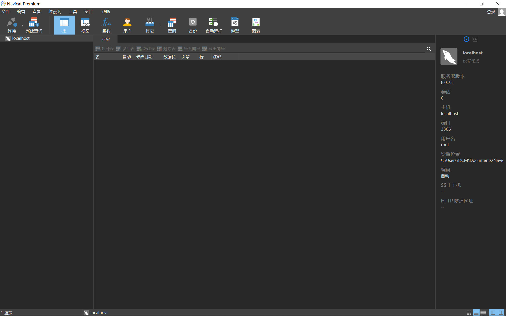
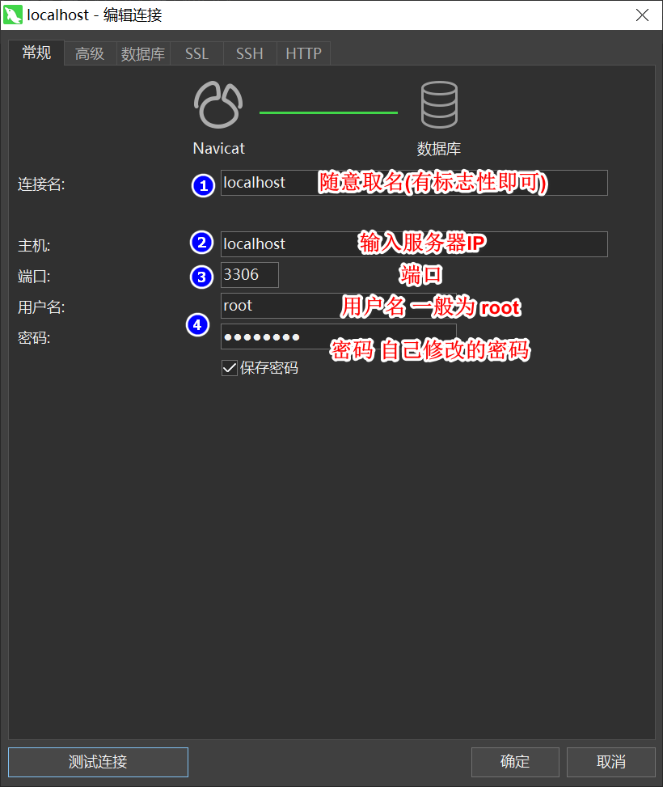
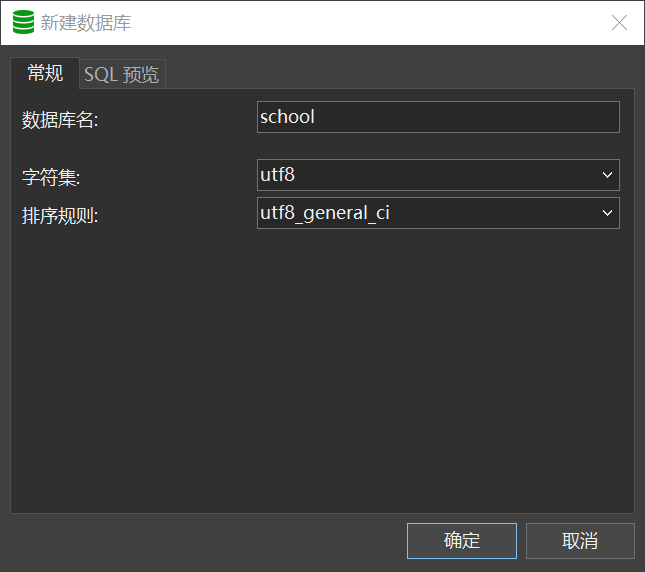
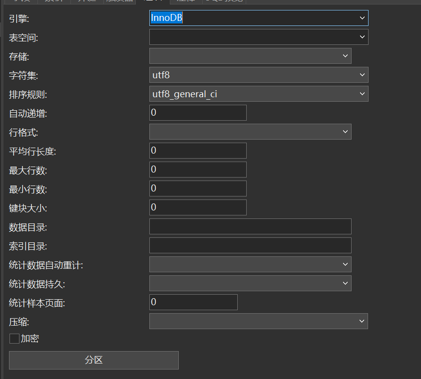
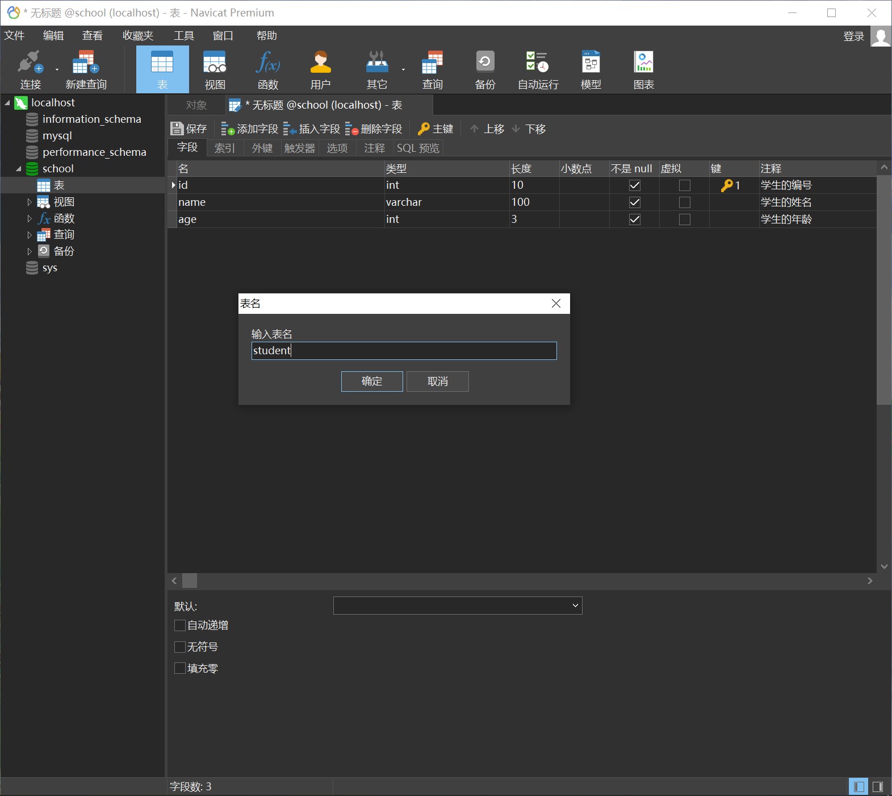

MySQL是一个关系型数据库管理系统，由瑞典MySQL AB公司开发，属于Oracle旗下产品。MySQL是最流行的关系型数据库管理系统之一，在WEB应用方面，MySQL是最好的 RDBMS(Relational Database Management System，关系数据库管理系统)应用软件之一。
MySQL是一种关系型数据库管理系统，关系数据库将数据保存在不同的表中，而不是将所有数据放在一个大仓库内，这样就增加了速度并提高了灵活性。
MySQL所使用的 SQL 语言是用于访问数据库的最常用标准化语言。MySQL软件采用了双授权政策，分为社区版和商业版，由于其体积小、速度快、总体拥有成本低，尤其是开放源码这一特点，一般网站的开发都选择 MySQL 作为网站数据库。
初识MySQL
MySQL的安装
首先我们需要在Oracle的官网下载MySQL的安装包，推荐下载ZIP压缩包，使用压缩包可以避免注册表产生的相关问题，下载完成后，对ZIP进行解压。
这里选择了下载8.025版本，可能会存在问题，理论上安装5.7版本应该是最稳定的，不过鉴于学习的目的，先瞎鼓捣尝试一下。
解压完成后，在根目录中，我们需要新建一个my.ini文件，该文件是mysql的配置文件，可以对mysql进行相关的配置。我的配置如下所示（网上偷师学到的，不保证靠谱，记住mysql安装目录一定要改成自己的！）：
1 | [mysqld] |
之后配置系统变量，将mysql\bin目录添加到path环境变量中去，方便在命令行界面使用命令。
使用管理员权限打开cmd界面（否则将没有权限开启服务）
将路径切换到mysql的bin目录下，使用命令mysqld -install安装mysql。再输入mysqld –initialize-insecure –user=mysql初始化数据文件（可以看到出现了data文件夹，里面以db形式存放了数据库的配置信息）
之后启动mysql，使用mysql -u root -p进入mysql管理界面（此时密码为空，直接回车进入即可）
进入界面后，可以更改root密码：
1 | update mysql.user set authentication_string=password('123456') where user='root' and Host='localhost'; |
(记住SQL语句输入完成后需要输入;)
(输入flash privileges;刷新权限)
最后重启mysql即可正常进行使用：
在管理员权限下的控制台输入：
- net stop mysql 停止mysql服务
- net start mysql 启动mysql服务
之后尝试用mysql -u’root’ -p’password’进行登录(‘root’ 可以修改为自己的用户 ‘password’改成自己设置的密码，如123456，切记-u和’root’ 、-p和’password’ 之间没有空格！)
注意：若mysql服务安装错误，可以使用sc delete mysql语句在管理员权限下清空服务
SQL可视化软件
- SQLyog 体积较小，功能较为完善
- Navicat 体积较大，功能较多
本次尝试使用Navicat对数据库进行可视化管理！


测试基本的新建数据库操作
要求：新建一个数据库，名称为：school
新建一张表，表名为：
student 新建一些字段：id, name, age等



使用命令行界面连接数据库
使用语句mysql -uroot -p，之后输入密码，密码正确后，即可正确进入MySQL
MySQL中，使用--作为注释，例如-- 注释
简单的一些基本语句：
1 | mysql> show databases; -- 展示所有的数据库 |
数据库的基本语言 核心即CRUD业务(增删改查)
DDL 定义
DML 操作
DQL 查询
DCL 控制
操作数据库
操作数据库 > 操作数据库中的表 > 操作数据库中的表的数据
mysql关键字不区分大小写
SQL基本信息
表（table）
某种特定类型数据的结构化清单
数据库中的每个表都有一个名字，用来标识自己。此名字是唯一的，这表示数据库中没有其他表具有相同的名字。
表名 表名的唯一性取决于多个因素，如数据库名和表名等的结合。这表示，虽然在相同数据库中不能两次使用相同的表名，但在不同的数据库中却可以使用相同的表名。
模式（schema）
关于数据库和表的布局及特性的信息
有时，模式用作数据库的同义词。遗憾的是，模式的含义通常在上下文中并不是很清晰。
列（column）表中的一个字段
所有表都是由一个或多个列组成的。
分解数据 正确地将数据分解为多个列极为重要。例如，城市、州、邮政编码应该总是独立的列。通过把它分解开，才有可能利用特定的列对数据进行排序和过滤（如，找出特定州或特定城市的所有顾客）。如果城市和州组合在一个列中，则按州进行排序或过滤会很困难。
数据类型（datatype）所容许的数据的类型。每个表列都有相应的数据类型，它限制（或容许）该列中存储的数据。
行（row） 表中的一个记录
表中的数据是按行存储的，所保存的每个记录存储在自己的行内。如果将表想象为网格，网格中垂直的列为表列，水平行为表行。
主键（primary key）
一列（或一组列），其值能够唯一区分表中每个行。
唯一标识表中每行的这个列（或这组列）称为主键。主键用来表示一个特定的行。没有主键，更新或删除表中特定行很困难，因为没有安全的方法保证只涉及相关的行。
应该总是定义主键 虽然并不总是都需要主键，但大多数数据库设计人员都应保证他们创建的每个表具有一个主键，以便于以后的数据操纵和管理。
表中的任何列都可以作为主键，只要它满足以下条件：
- 任意两行都不具有相同的主键值；
- 每个行都必须具有一个主键值（主键列不允许NULL值）。
主键通常定义在表的一列上，但这并不是必需的，也可以一起使用多个列作为主键。在使用多列作为主键时，上述条件必须应用到构成主键的所有列，所有列值的组合必须是唯一的（但单个列的值可以不唯一）。
主键的最好习惯 除MySQL强制实施的规则外，应该坚持的几个普遍认可的最好习惯为：
- 不更新主键列中的值；
- 不重用主键列的值；
- 不在主键列中使用可能会更改的值。（例如，如果使用一个名字作为主键以标识某个供应商，当该供应商合并和更改其名字时，必须更改这个主键。）
导入样例的数据库
我们使用《MySQL必知必会》内提供的样例表进行操作。
进入书中提供的网址：MySQL Crash Course – Ben Forta
此时网站提供的样例表下载资源URL为(若不能下载，请尝试挂梯子或者进入网站下载)：点击下载
下载完成后存储到磁盘位置，之后使用文件(create.sql populate.sql)进行样例表的创建。
创建数据库
使用mysql命令行界面：
输入创建数据库命令：create database crashcourse;
1 | mysql> create database crashcourse; |
使用crashcourse作为数据库的名称，便于与《MySQL必知必会》上的案例结合。
选取数据库
使用use命令：use crashcourse;
执行create.sql脚本
输入执行脚本的命令，即指定数据库的源；
1 | mysql> use crashcourse; |
执行populate.sql脚本
1 | mysql> source E:\DataBase\mysql_scripts\populate.sql |
查看表
1 | mysql> show tables; |
查看表列
1 | mysql> show columns from customers; -- 使用SHOW COLUMNS展示表列，或者使用DESCRIBE |
可以看到，上述表列中，有一个Extra属性，其中出现了auto_increment;
该属性的含义为自动增加编号而不必自己去进行定义赋值。
什么是自动增量？ 某些表列需要唯一值。例如，订单编号、雇员ID或（如上面例子中所示的）顾客ID。在每个行添加到表中时，MySQL可以自动地为每个行分配下一个可用编号，不用在添加一行时手动分配唯一值（这样做必须记住最后一次使用的值）。这个功能就是所谓的自动增量。如果需要它，则必须在用CREATE语句创建表时把它作为表定义的组成部分。
检索数据
SELECT语句
SELECT语句的作用是从一个或者多个表中检索出信息。
为了使用SELECT语句，至少要提供两条信息：
- 想选择什么信息
- 以及从什么地方选择
检索单个列
使用语句：select FIELD from TABLE;
此语句检索单个列所需的列名在SELECT关键字之后给出，FROM关键字指出从其中检索数据的表名。
1 | mysql> describe products; |
若进行该查询，可能会发现显示出的数据顺序和此处的顺序不相同，原因是未指定排序查询结果，因此返回的数据顺序不具有特殊意义。
SQL语句和大小写 请注意，SQL语句不区分大小写，因此SELECT与select是相同的。同样，写成Select也没有关系。
许多SQL开发人员喜欢对所有SQL关键字使用大写，而对所有列和表名使用小写，这样做使代码更易于阅读和调试。 不过，一定要认识到虽然SQL是不区分大小写的，但有些标识符（如数据库名、表名、列名）可能不同：在MySQL 4.1及之前的版本中，这些标识符默认是区分大小写的；在MySQL 4.1.1版本中，这些标识符默认是不区分大小写的。
最佳方式是按照大小写的惯例，且使用时保持一致。
使用空格 在处理SQL语句时，其中所有空格都被忽略。SQL语句可以在一行上给出，也可以分成许多行。多数SQL开发人员认为将SQL语句分成多行更容易阅读和调试。
检索多个列
逗号 在选择多个列时，一定要在列名之前加上逗号，最后一个列名不加逗号。
使用语句：SELECT prod_id, prod_name, prod_price FROM products;
此语句指令了3个列名，列名之间使用逗号进行分隔，以此对多个列检索
1 | mysql> SELECT prod_id, prod_name, prod_price FROM products; |
检索所有列
使用语句：SELECT * FROM products;
此语句使用通配符(*)，返回表中的所有列，列的顺序不固定。
1 | mysql> SELECT * FROM products; |
该语句可以用来检索未知列，因为通配符可以匹配所有的列名
检索不同的行
使用SELECT返回的是所有的匹配的行，若不想让每个值在每次都出现，可以使用DISTINCT关键字使得MySQL返回不同的值。
使用语句：SELECT DISTINCT vend_id FROM products;
此语句只返回不同的vend_id行，若使用DISTINCT关键字，必须放在列名之前。
1 | mysql> SELECT DISTINCT vend_id FROM products; -- 使用DISTINCT关键字，查询不同值 |
注意！ 不能部分使用DISTINCT，若使用则必须所有的列都使用，否则将会检索所有的行。
1 | mysql> SELECT DISTINCT vend_id, |
限制结果
使用语句：SELECT prod_name FROM products LIMIT 5;
此语句使用LIMIT进行限制，使得MySQL返回的行数不多于5行。
1 | mysql> SELECT prod_name FROM products LIMIT 5; |
为了得出下一个5行，可以指定要检索的开始行和检索行数：
使用语句：SELECT prod_name FROM products LIMIT 5,5;
此语句中：LIMIT 5,5指示Mysql返回从第5行开始的之后5行。
1 | mysql> SELECT prod_name FROM products LIMIT 5,5; |
注意！ 行数从第0行开始，故使用LIMIT 1，1检测出的是第二行而不是第一行。当行数没有足够的行时，使用LIMIT只返回它能返回的行。
使用完全限定的表名
使用语句：SLEECT products.prod_name FROM products;
此语句中：限定了一个完全被指定了表和列的列名，在某些特殊情况下，需要使用该条语句！
排序数据
使用SELECT语句可以检索需要的数据，但是，正如3.1节中所示，并不存在特定的顺序。如果不排序，数据一般将以它在底层表中出现的顺序显示。这可以是数据最初添加到表中的顺序。但是，如果数据后来进行过更新或删除，则此顺序将会受到MySQL重用回收存储空间的影响。因此，如果不明确控制的话，不能（也不应该）依赖该排序顺序。关系数据库设计理论认为，如果不明确规定排序顺序，则不应该假定检索出的数据的顺序有意义。
子句（clause） SQL语句由子句构成，有些子句是必需的，而有的是可选的。一个子句通常由一个关键字和所提供的数据组成。子句的例子有SELECT语句的FROM子句，我们在前一章看到过这个子句。
为了明确地排序用SELECT语句检索出的数据，可使用ORDER BY子句。ORDER BY子句取一个或多个列的名字，据此对输出进行排序。
按照单个列排序
使用语句：SELECT prod_name FROM products ORDER BY prod_name;
此语句中：指示了按照prod_name列以字母顺序(字典序)进行数据的排序，使用了ORDER BY子句。
1 | mysql> SELECT prod_name FROM products ORDER BY prod_name; |
按照多个列进行排序
经常会出现需要按照多个列进行排序的情况，例如：希望先按照雇员的姓排序，排序之后再按照雇员的名进行排序(即：公司人员较多，出现较多重复姓氏)，此时若能够按照多个列进行排序，则很有用。
使用语句：SELECT * FROM products ORDER BY vend_id, prod_price;
此语句中：使用*获取products中的所有信息，再首先按照vend_id进行升序排序，排序后若出现vend_id相同的行，再按照``prod_price`对价格进行排序。
1 | mysql> SELECT * FROM products ORDER BY vend_id, prod_price; |
指定排序方向
数据排序可以按照升序（默认排序顺序），也可以按照降序排序，若使用降序，则必须指定DESC关键字(descent)对列进行降序排序。
使用语句：SELECT prod_id, prod_price, prod_name FROM products ORDER BY prod_price DESC, prod_name;
此语句中：按照倒序（降价）的顺序排序商品，再对产品的名称进行正序排序；
1 | mysql> SELECT prod_id, prod_price, prod_name FROM products ORDER BY prod_price DESC, prod_name; |
若对多个列使用降序排序，则必须对每个列指定
DESC关键字。与此同时，若想使用升序排序，需要使用ASC关键字(ascending)，但是事实上不必要如此设定，因为升序排序是默认选项。
区分大小写和排序顺序 在对文本性的数据进行排序时，A与a相同吗？a位于B之前还是位于Z之后？这些问题不是理论问题，其答案取决于数据库如何设置。在字典（dictionary）排序顺序中，A被视为与a相同，这是MySQL（和大多数数据库管理系统）的默认行为。但是，许多数据库管理员能够在需要时改变这种行为（如果你的数据库包含大量外语字符，可能必须这样做）。
查询最值
使用ORDER BY和LIMIT的组合，可以很方便的找到一列中的最值。
使用语句：SELECT prod_price, prod_name FROM products ORDER BY prod_price DESC LIMIT 1;
此语句中：使用了ORDER BY和LIMIT的组合，找到价格最昂贵的物品的价格和名称。
1 | mysql> SELECT prod_price, prod_name FROM products ORDER BY prod_price DESC LIMIT 1; |
过滤数据
数据库表一般包含大量的数据，很少需要检索表中所有行。通常只会根据特定操作或报告的需要提取表数据的子集。只检索所需数据需要指定搜索条件（search criteria），搜索条件也称为过滤条件（filter condition）。
一般使用SELECT语句和WHERE子句进行，在SELECT语句中，数据根据WHERE子句中指定的搜索条件进行过滤。WHERE子句在表名（FROM子句）之后给出。
使用语句：SELECT prod_name, prod_price FROM products WHERE prod_price = 2.5;
此语句中：将查询products表中，prod_price (价格)等于2.5的元素。并将这些行返回。
1 | mysql> SELECT prod_id, prod_price FROM products WHERE prod_price = 2.5; |
SQL过滤与应用过滤 数据也可以在应用层过滤。为此目的，SQL的SELECT语句为客户机应用检索出超过实际所需的数据，然后客户机代码对返回数据进行循环，以提取出需要的行。
通常，这种实现并不令人满意。因此，对数据库进行了优化，以便快速有效地对数据进行过滤。让客户机应用（或开发语言）处理数据库的工作将会极大地影响应用的性能，并且使所创建的应用完全不具备可伸缩性。此外，如果在客户机上过滤数据，服务器不得不通过网络发送多余的数据，这将导致网络带宽的浪费。
若使用ORDER BY和WHERE子句，应该将ORDER BY位于WHERE之后
WHERE子句操作符
| 操作符 | 说明 |
|---|---|
| = | 等于 |
| <> | 不等于 |
| != | 不等于 |
| < | 小于 |
| <= | 小于等于 |
| > | 大于 |
| >= | 大于等于 |
| BETWEEN | 在指定的两个值之间 |
MySQL支持以上的所有操作符，可以用在WHERE后，进行条件判断
检查单个值
使用语句：SELECT * FROM products WHERE prod_name = 'fuses';
此语句中：检查prod_name为’fuses’的行，它返回prod_name的值为Fuses的一行。MySQL在执行匹配时默认不区分大小写，所以fuses与Fuses匹配。
1 | mysql> SELECT * FROM products WHERE prod_name = 'fuses'; |
使用语句：SELECT prod_name, prod_price FROM products WHERE prod_price < 10;
1 | mysql> SELECT prod_name, prod_price FROM products WHERE prod_price < 10; |
使用语句：SELECT * FROM products WHERE prod_price BETWEEN 5 AND 10;
1 | mysql> SELECT * FROM products WHERE prod_price BETWEEN 5 AND 10; |
不匹配检查
使用语句：SELECT vend_id, prod_name FROM products WHERE vend_id != 1003 AND vend_id <> 1001;
此语句中：使用!=和<>进行不匹配检查，索引不满足需求的行，可以看到使用两种操作符可以得到一样的结果。
1 | mysql> SELECT vend_id, prod_name FROM products WHERE vend_id != 1003 AND vend_id <> 1001; |
范围值检查
使用BETWEEN操作符，可以用来进行范围值检查
使用语句：SELECT prod_name, prod_price FROM products WHERE prod_price BETWEEN 5 AND 10 AND vend_id != 1001;
此语句中：查找价格在5到10之间且id不为1001的所有行。在使用BETWEEN时，必须指定两个值——所需范围的低端值和高端值。这两个值必须用AND关键字分隔。BETWEEN匹配范围中所有值，包括指定的开始值和结束值。
1 | mysql> SELECT prod_name, prod_price FROM products WHERE prod_price BETWEEN 5 AND 10 AND vend_id != 1001; |
空值检查
在创建表时，可以指定当前的列中能否存在不包含值，若一个列不包含值，视作包含空值NULL
NULL 无值（no value），它与字段包含0、空字符串或仅仅包含空格不同。
使用IS NULL子句可以返回有空值的列，例如查没有填写家庭地址的客户。
使用语句：SELECT * FROM customers WHERE cust_email IS NULL;
1 | mysql> SELECT * FROM customers WHERE cust_email IS NULL; |
NULL与不匹配 在通过过滤选择出不具有特定值的行时，你可能希望返回具有NULL值的行。但是，不行。因为未知具有特殊的含义，数据库不知道它们是否匹配，所以在匹配过滤或不匹配过滤时不返回它们。
因此，在过滤数据时，一定要验证返回数据中确实给出了被过滤列具有NULL的行。
组合过滤数据
我们在使用WHERE子句时，还可以使用AND OR NOT IN这样的操作符进行匹配。
AND操作符
使用语句：SELECT prod_id, prod_price, prod_name FROM products WHERE vend_id = 1003 AND prod_price <= 10 AND prod_name != 'Sling';
此语句中：使用了AND操作符来进行匹配，若存在多个与逻辑，需要使用多个AND。
1 | mysql> SELECT prod_id, prod_price, prod_name FROM products WHERE vend_id = 1003 AND prod_price <= 10 AND prod_name != 'Sling'; |
OR操作符
使用语句：SELECT prod_name, prod_price FROM products WHERE vend_id = 1002 OR vend_id = 1003;
1 | mysql> SELECT prod_name, prod_price FROM products WHERE vend_id = 1002 OR vend_id = 1003; |
计算次序
WHERE语句可以包含任意数目的AND和OR操作符，但是若过于依赖其默认的排序，很可能出现匹配的问题，我们需要使用圆括号帮助其进行优先匹配。
例如，若想查询价格为10元以上,且编号1002或1003，若使用语句SELECT prod_name, prod_price FROM products WHERE vend_id = 1002 OR vend_id = 1003 AND prod_price >= 10;
一定会产生错误，原因是，SQL在处理OR操作符之前，会优先处理AND操作符，因此这句话中，它会认为应该先找出编号为1003并且价格大于10的产品，或者找到编号为1002的产品，因此会出现有编号为1002的产品的价格少于10。从而产生错误，因此可以使用括号增加优先级，如下所示：
使用语句：SELECT prod_name, prod_price FROM products WHERE (vend_id = 1002 OR vend_id = 1003) AND prod_price >= 10;
1 | mysql> SELECT prod_name, prod_price FROM products WHERE (vend_id = 1002 OR vend_id = 1003) AND prod_price >= 10; |
可以看到此时结果正确，查询结果正常。
在WHERE子句中使用圆括号 任何时候使用具有AND和OR操作符的WHERE子句，都应该使用圆括号明确地分组操作符。不要过分依赖默认计算次序，即使它确实是你想要的东西也是如此。使用圆括号没有什么坏处，它能消除歧义。
IN操作符
圆括号在WHERE子句中还有另外一种用法。IN操作符用来指定条件范围，范围中的每个条件都可以进行匹配。IN取合法值的由逗号分隔的清单，全都括在圆括号中。
使用语句：SELECT prod_name, prod_price FROM products WHERE vend_id IN (1002, 1003) ORDER BY prod_name;
此语句中：使用了IN匹配了vend_id中，所有编号为1002和1003的值，并按照prod_name的字典序排序。
1 | mysql> SELECT prod_name, prod_price FROM products WHERE vend_id IN (1002, 1003) ORDER BY prod_name; |
使用IN操作符可以代替OR操作符的功能，且较为方便便捷。
例如上述代码，使用以下含OR的代码一样可以完成操作，但是使用IN更加清除直观，且次序较容易管理，比OR操作符执行速度要快。
NOT操作符
WHERE子句中的NOT操作符只有一个功能，即否定之后的所有关键字。
MySQL中的NOT MySQL支持使用NOT 对IN 、BETWEEN 和EXISTS子句取反，这与多数其他DBMS允许使用NOT对各种条件取反有很大的差别。
使用语句：SELECT prod_name, vend_id, prod_price FROM products WHERE vend_id NOT IN (1002, 1003) AND prod_price NOT BETWEEN 5 AND 10;
此语句中：使用NOT对1002和1003编号进行反选，且除去价格5到10之间的行。
1 | mysql> SELECT prod_name, vend_id, prod_price FROM products WHERE vend_id NOT IN (1002, 1003) AND prod_price NOT BETWEEN 5 AND 10; |
通配符匹配
前面介绍的所有操作符都是针对已知值进行过滤的。不管是匹配一个还是多个值，测试大于还是小于已知值，或者检查某个范围的值，共同点是过滤中使用的值都是已知的。但是，这种过滤方法并不是任何时候都好用。例如，怎样搜索产品名中包含文本anvil的所有产品？用简单的比较操作符肯定不行，必须使用通配符。利用通配符可创建比较特定数据的搜索模式。在这个例子中，如果你想找出名称包含anvil的所有产品，可构造一个通配符搜索模式，找出产品名中任何位置出现anvil的产品。
百分号(%)通配符
使用%可以表示任何字符出现任意次数，例如为了找出jet开头的产品，可以使用jet%进行匹配。
使用语句：SELECT prod_id, prod_name From products WHERE prod_name LIKE 'jet%';
此语句中：使用jet%进行了匹配，jet和JET都可以进行匹配，数据库若不特殊配置，不区分大小写，若配置后，jet%与JetPACK会不匹配。
1 | mysql> SELECT prod_id, prod_name From products WHERE prod_name LIKE 'jet%'; |
若想要查询含有某个词的行，可以前后都带上%，例如%anvil%，这个可以匹配任何位置包含anvil的文本，不论前后出现过什么字符。
通配符也可以出现在搜索模式之间，例如s%e可以找出以s开头和以e结尾的字符，且%代表0个，1个或多个字符，意味着其也可以匹配se。
注意尾空格 尾空格可能会干扰通配符匹配。例如，在保存词anvil 时， 如果它后面有一个或多个空格， 则子句WHEREprod_name LIKE ‘%anvil’将不会匹配它们，因为在最后的l后有多余的字符。解决这个问题的一个简单的办法是在搜索模式最后附加一个%。一个更好的办法是使用函数去掉首尾空格。
注意NULL 虽然似乎%通配符可以匹配任何东西，但有一个例外，即NULL。即使是WHERE prod_name LIKE ‘%’也不能匹配用值NULL作为产品名的行。
下划线(_)通配符
该通配符可以匹配单个字符，不能和%一样去匹配多个字符或0个字符，必须要恰好为1个。
例如，使用LIKE ‘_ ton anvil’，可以匹配例如’1 ton anvil’但是不能匹配’.1 ton anvil’
使用通配符的技巧
- 不要过度使用通配符。如果其他操作符能达到相同的目的，应该使用其他操作符。
- 在确实需要使用通配符时，除非绝对有必要，否则不要把它们用在搜索模式的开始处。把通配符置于搜索模式的开始处，搜索起来是最慢的。即先把范围缩小后，再使用通配符进行查询
- 仔细注意通配符的位置。如果放错地方，可能不会返回想要的数据。
使用正则表达式
正则表达式用正则表达式语言来建立，正则表达式语言是用来完成刚讨论的所有工作以及更多工作的一种特殊语言。与任意语言一样，正则表达式具有你必须学习的特殊的语法和指令。
注意，MySQL中的正则表达式仅为正则表达式的一个子集，意味着有些语句会受到限制。
基本字符匹配
使用REGEXP(Regular Expression)关键字去进行匹配，后面所跟的东西叫做正则表达式。
使用语句：SELECT prod_name FROM products WHERE prod_name REGEXP '.000' ORDER BY prod_name;
此语句中：使用了正则表达式 .000代替了1000和2000等数据，即.匹配了任意一个字符，因此将1000和2000全部匹配。
1 | mysql> SELECT prod_name FROM products WHERE prod_name REGEXP '.000' ORDER BY prod_name; |
使用LIKE和REGEXP有区别，LIKE不会匹配列值，若被匹配的文本在列值中出现，LIKE将无法找到，但是REGEXP可以找到。
2
3
4
5
6
7
8
9
10
11
12
13
14
15
16
17
18
Empty set (0.00 sec)
mysql> SELECT prod_name FROM products WHERE prod_name LIKE '1 TON%';
+-------------+
| prod_name |
+-------------+
| 1 ton anvil |
+-------------+
1 row in set (0.00 sec)
mysql> SELECT prod_name FROM products WHERE prod_name REGEXP '1 TON';
+-------------+
| prod_name |
+-------------+
| 1 ton anvil |
+-------------+
1 row in set (0.00 sec)
匹配不区分大小写 MySQL中的正则表达式匹配（自版本3.23.4后）不区分大小写（即，大写和小写都匹配）。为区分大小写，可使用BINARY关键字，如WHERE prod_name REGEXPBINARY ‘JetPack .000’。
进行OR匹配
使用|进行或匹配，例如 REGEXP '1000|2000|3000'，将匹配1000或2000或3000，因此将会把所有的匹配数据全部返回。
匹配特定字符
可以使用[]对特定的一组字符进行匹配，例如使用’REGEXP [123] TON’，将会匹配1或2或3 TON
使用语句：SELECT prod_name FROM products WHERE prod_name REGEXP '[123] TON';
1 | mysql> SELECT prod_name FROM products WHERE prod_name REGEXP '[123] TON'; |
所以，[] 像是另一种OR语句，。事实上，正则表达式[123] Ton为[1|2|3] Ton的缩写，也可以使用后者。但是，需要用[]来定义OR语句查找什么。
若不使用[]则会导致查找出错，例如使用 1|2|3 TON ，MySQL会假定你的意思是’1’或’2’或’3 ton’。
在前面加上^可以取反，例如[ ^123]可以匹配除了123以外的任何东西
匹配范围
[0123456789]可以用来匹配数字0-9，但是若字符较多会比较麻烦，因此可以使用[0-9]来匹配0-9
范围不限于完整的集合，[1-3]和[6-9]也是合法的范围。此外，范围不一定只是数值的，[a-z]匹配任意字母字符。
使用语句：SELECT prod_name FROM products WHERE prod_name REGEXP '[0-5] TON' ORDER BY prod_name;
1 | mysql> SELECT prod_name FROM products WHERE prod_name REGEXP '[0-5] TON' ORDER BY prod_name; |
匹配特殊字符
正则表达式中包含了特殊字符，例如：. [] | - 等特殊字符，那么若想查询此类特殊字符，应该怎么办？
答案是可以使用\\作为前导，\- 表示查找 -， \. 表示查找 .
使用语句：SELECT vend_name FROM vendors WHERE vend_name REGEXP '\\.' ORDER BY vend_name;
1 | mysql> SELECT vend_name FROM vendors WHERE vend_name REGEXP '\\.' ORDER BY vend_name; |
除此之外，\也可以用来引用元字符，例如：
| 元字符 | 说明 |
| —– | ——– |
| \\f | 换页 |
| \\n | 换行 |
| \\r | 回车 |
| \\t | 制表 |
| \\v | 纵向制表 |
为了匹配反斜杠本身，需要使用
\\\进行匹配。
\或\\? 多数正则表达式实现使用单个反斜杠转义特殊字符，以便能使用这些字符本身。但MySQL要求两个反斜杠（MySQL自己解释一个，正则表达式库解释另一个）。
匹配字符类
为了更方便地找出经常使用的数字，字母或者数字字母字符等，可以适用预定的字符集。称为字符类(character class)
字符类如下表所示：
| 类 | 说明 |
|---|---|
| [:alnum:] | 任意字母和数字（同[a-zA-Z0-9]） |
| [:alpha:] | 任意字符（同[a-zA-Z]） |
| [:blank:] | 空格和制表（同[\t]） |
| [:cntrl:] | ASCII控制字符（ASCII 0到31和127） |
| [:digit:] | 任意数字（同[0-9]） |
| [:graph:] | 与[:print:]相同，但不包括空格 |
| [:lower:] | 任意小写字母（同[a-z]） |
| [:print:] | 任意可打印字符 |
| [:punct:] | 既不在[:alnum:]又不在[:cntrl:]中的任意字符 |
| [:space:] | 包括空格在内的任意空白字符（同[\f\n\r\t\v]） |
| [:upper:] | 任意大写字母（同[A-Z]） |
| [:xdigit:] | 任意十六进制数字（同[a-fA-F0-9]） |
匹配多个实例
可以使用重复元字符进行多个匹配，例如找出所有的数而不管一共有多少位，或者想查询一个单词但是满足单词后可能接上了尾缀s。
重复元字符如下表：
| 元字符 | 说明 |
|---|---|
| * | 0个或多个匹配 |
| + | 1个或多个匹配（等于{1,}） |
| ? | 0个或1个匹配（等于{0,1}） |
| {n} | 指定数目的匹配 |
| {n,} | 不少于指定数目的匹配 |
| {n,m} | 匹配数目的范围（m不超过255） |
使用语句：SELECT prod_name FROM products WHERE prod_name REGEXP '\\([0-9] sticks?\\)';
此语句中：\\() 匹配了括号，sticks? 匹配 stick或者sticks，?表示前一个字符出现1次或者0次。
1 | mysql> SELECT prod_name FROM products WHERE prod_name REGEXP '\\([0-9] sticks?\\)'; |
使用语句：SELECT prod_name FROM products WHERE prod_name REGEXP '[[:digit:]]{4}' ORDER BY prod_name;
此语句中：，[:digit:]匹配任意数字，因而它为数字的一个集合。{4}确切地要求它前面的字符（任意数字）出现4次，所以[[:digit:]]{4}匹配连在一起的任意4位数字。
1 | mysql> SELECT prod_name FROM products WHERE prod_name REGEXP '[[:digit:]]{4}' ORDER BY prod_name; |
定位符
目前为止的所有例子都是为了匹配一个串中任意位置的文本，为了匹配特定位置的文本，需要使用定位符。
定位符如下所示：
| 元 字 符 | 说 明 |
|---|---|
| ^ | 文本的开始 |
| $ | 文本的结尾 |
| [[:<:]] | 词的开始 |
| [[:>:]] | 词的结尾 |
若想搜索一个以数或者小数点开头的所有产品，应该怎么使用？如果简单的搜索[0-9\\.]肯定不行，因为他会在文本内任意匹配而不是在开头匹配。
使用语句：SELECT prod_name FROM products WHERE prod_name REGEXP '^[0-9\\.]' ORDER BY prod_name;
1 | mysql> SELECT prod_name FROM products WHERE prod_name REGEXP '^[0-9\\.]' ORDER BY prod_name; |
^的双重用途 ^有两种用法。在集合中（用[和]定义），用它来否定该集合，否则，用来指串的开始处。
使REGEXP起类似LIKE的作用 LIKE和REGEXP的不同在于，LIKE匹配整个串而REGEXP匹配子串。利用定位符，通过用^开始每个表达式，用$结束每个表达式，可以使REGEXP的作用与LIKE一样。
简单的正则表达式测试 可以在不使用数据库表的情况下用SELECT来测试正则表达式。REGEXP检查总是返回0（没有匹配）或1（匹配）。可以用带文字串的REGEXP来测试表达式，并试验它们。相应的语法如下：
SELECT ‘hello’ REGEXP ‘[0-9]’;
这个例子显然将返回0（因为文本hello中没有数字）。
创建计算字段
存储在表中的数据不都是应用程序所需要的。我们需要直接从数据库中检索出转换、计算或格式化过的数据；而不是检索出数据，然后再在客户机应用程序或报告程序中重新格式化。
字段 基本上与列（column）的意思相同，经常互换使用，不过数据库列一般称为列，而术语字段通常用在计算字段的连接上。
客户机与服务器的格式 可在SQL语句内完成的许多转换和格式化工作都可以直接在客户机应用程序内完成。但一般来说，在数据库服务器上完成这些操作比在客户机中完成要快得多，因为DBMS是设计来快速有效地完成这种处理的。
拼接字段
vendors表包含供应商名和位置信息。假如要生成一个供应商报表，需要在供应商的名字中按照name(location)这样的格式列出供应商的位置。
拼接（concatenate） 将值联结到一起构成单个值。
解决方案是把两个列直接拼接起来，在MySQL的SELECT语句中，可以使用Concat()函数来拼接两个列。
使用语句：SELECT Concat(vend_name, '(', vend_country, ')') FROM vendors ORDER BY vend_name;
1 | mysql> SELECT Concat(vend_name, '(', vend_country, ')') FROM vendors ORDER BY vend_name; |
Concat()需要一个或多个指定的串，各个串之间用逗号分隔。上面的SELECT语句连接以下4个元素：
- 存储在vend_name列中的名字；
- 包含一个空格和一个左圆括号的串；
- 存储在vend_country列中的国家；
- 包含一个右圆括号的串。
Trim函数
Trim函数 该函数可以将值的左右两侧空格全部去掉，使用RTrim可以去掉右侧的空格，使用LTrim可以去掉左侧的空格
例如使用语句：SELECT Concat(Trim(vend_name), '(', Trim(vend_country), ')') FROM vendors ORDER BY vend_name;
使用别名
SELECT语句拼接地址字段工作得很好，但是新计算列的名字实际上没有，只是一个值，而一个未知的值不能用在客户机应用中，因为其没有办法被引用，因此我们使用AS语句，为其赋予一个替换名(别名：alias)。
使用语句：SELECT Concat(Trim(vend_name), '(', Trim(vend_country), ')') AS vend_title FROM vendors ORDER BY vend_name;
此语句中：可以看到返回的列名为vend_title，所有的客户机都可以直接使用，就像一个实际的列表一样。
1 | mysql> SELECT Concat(Trim(vend_name), '(', Trim(vend_country), ')') AS vend_title FROM vendors ORDER BY vend_name; |
导出列 别名有时也称为导出列（derived column），不管称为什么，它们所代表的都是相同的东西。
别名的其他用途 别名还有其他用途。常见的用途包括在实际的表列名包含不符合规定的字符（如空格）时重新命名它，在原来的名字含混或容易误解时扩充它，等等。
执行算术计算
在使用SELECT语句中，可能会出现需要进行算数运算的情况，例如，知道物品单价和物品数量，想知道总价格，应该将单价与数量相乘。显然在知道了单价和数量后，没有必要将总价格进行储存，这将占很大的空间。
所以我们可以使用算数运算，进行统计。
使用语句：SELECT prod_id, quantity, item_price, quantity * item_price AS total_price FROM orderitems WHERE order_num = 20005;
1 | mysql> SELECT prod_id, quantity, item_price, quantity * item_price AS total_price FROM orderitems WHERE order_num = 20005; |
除此之外，还允许使用+，-，*，/操作符。
使用数据处理函数
大多数SQL支持以下类型的函数：
- 用于处理文本串（如删除或填充值，转换值为大写或小写）的文本函数。
- 用于在数值数据上进行算术操作（如返回绝对值，进行代数运算）的数值函数。
- 用于处理日期和时间值并从这些值中提取特定成分（例如，返回两个日期之差，检查日期有效性等）的日期和时间函数。
- 返回DBMS正使用的特殊信息（如返回用户登录信息，检查版本细节）的系统函数。
文本处理函数
| 函数 | 说明 |
|---|---|
| Left() | 返回串左边的字符 |
| Right() | 返回串右边的字符 |
| LTrim() | 去掉串左边的空格 |
| RTrim() | 去掉串右边的空格 |
| Locate() | 找出串的一个子串 |
| Length() | 返回串的长度 |
| Lower() | 将串转换为小写 |
| Soundex() | 返回串的SOUNDEX值 |
| SubString() | 返回子串的字符 |
| Upper() | 将串转换为大写 |
其中，Soundex()函数可以匹配读音相同的串，例如Soundex(‘Y.Lie’) = Soundex(‘Y LEE’)的返回值为TRUE；
使用语句：mysql> SELECT Upper(Trim(SubString(prod_desc, Length(prod_desc) - 4, 5))) AS temp FROM products;
此语句中：使用了Substring函数，用法为：SubString(buffer, offset, len);注意此处的offset从1开始到Length(buffer)结束。
1 | mysql> SELECT Upper(Trim(SubString(prod_desc, Length(prod_desc) - 4, 5))) AS temp FROM products; |
日期和时间处理函数
| 函数 | 说明 |
|---|---|
| AddDate() | 增加一个日期（天、周等） |
| AddTime() | 增加一个时间（时、分等） |
| CurDate() | 返回当前date |
| CurTime() | 返回当前time |
| Date() | 返回date time的date部分 |
| DateDiff() | 计算两个date之差 |
| Date_Add() | 高度灵活的日期运算函数 |
| Date_Format() | 返回一个格式化的日期或时间串 |
| Day() | 返回一个日期的天数部分 |
| DayOfWeek() | 对于一个date，返回对应的星期几 |
| Hour() | 返回一个时间的小时部分 |
| Minute() | 返回一个时间的分钟部分 |
| Month() | 返回一个日期的月份部分 |
| Now() | 返回当前date和time |
| Second() | 返回一个时间的秒部分 |
| Time() | 返回一个日期时间的时间部分 |
| Year() | 返回一个日期的年份部分 |
MySQL使用的日期格式无论什么时候都要使用yyyy-mm-dd。因此2021年5月1日，为2021-05-01。其他的方法也许也可以，但是这样可以排除多义性。
应该总是使用4位数字的年份 支持2位数字的年份，MySQL处理00-69为2000-2069，处理70-99为1970-1999。虽然它们可能是打算要的年份，但使用完整的4位数字年份更可靠，因为MySQL不必做出任何假定。
使用语句：SELECT cust_id, order_num, order_date, DateDiff(CurDate(), Date(order_date)) AS diff FROM orders WHERE Month(order_date) = '10';
1 | mysql> SELECT cust_id, order_num, order_date, DateDiff(CurDate(), Date(order_date)) AS diff FROM orders WHERE Month(order_date) = '10'; |
注意，sql中，星期天是1，星期一是2，……星期六是7
若需要检测一个范围，则可以使用BETWEEN操作符。
使用语句：SELECT cust_id, order_num FROM orders WHERE Date(order_date) BETWEEN '2005-09-01' AND '2005-09-30';
1 | mysql> SELECT cust_id, order_num FROM orders WHERE Date(order_date) BETWEEN '2005-09-01' AND '2005-09-30'; |
数值处理函数
| 函数 | 说明 |
|---|---|
| Abs() | 返回一个数的绝对值 |
| Cos() | 返回一个角度的余弦 |
| Exp() | 返回一个数的指数值 |
| Mod() | 返回除操作的余数 |
| Pi() | 返回圆周率 |
| Rand() | 返回一个随机数 |
| Sin() | 返回一个角度的正弦 |
| Sqrt() | 返回一个数的平方根 |
| Tan() | 返回一个角度的正切 |
汇总数据
我们经常需要汇总数据而不用把它们实际检索出来，为此MySQL提供了专门的函数。使用这些函数，MySQL查询可用于检索数据，以便分析和报表生成。这种类型的检索例子有以下几种。
- 确定表中行数（或者满足某个条件或包含某个特定值的行数）。
- 获得表中行组的和。
- 找出表列（或所有行或某些特定的行）的最大值、最小值和平均值。
汇总函数的使用
| 函数 | 说明 |
|---|---|
| AVG() | 返回某列的平均值 |
| COUNT() | 返回某列的行数 |
| MAX() | 返回某列的最大值 |
| MIN() | 返回某列的最小值 |
| SUM() | 返回某列值之和 |
AVG()
AVG()通过对表中行数计数并计算特定列值之和，求得该列的平均值。AVG()可用来返回所有列的平均值，也可以用来返回特定列或行的平均值。
使用语句：SELECT AVG(prod_price) AS avg_price FROM products;
1 | mysql> SELECT AVG(prod_price) AS avg_price FROM products; |
只用于单个列 AVG()只能用来确定特定数值列的平均值，而
且列名必须作为函数参数给出。为了获得多个列的平均值，
必须使用多个AVG()函数。
NULL值 AVG()函数忽略列值为NULL的行。
COUNT()
该COUNT()函数共有两种使用方式：
- 使用COUNT(*)对表中行的数目进行计数，不管表列中包含的是空值（NULL）还是非空值。
- 使用COUNT(column)对特定列中具有值的行进行计数，忽略NULL值。
使用语句：SELECT COUNT(*) AS num_cust FROM customers;
1 | mysql> SELECT COUNT(*) AS num_cust FROM customers; |
使用语句：SELECT COUNT(cust_email) AS num_cust FROM customers;
1 | mysql> SELECT COUNT(cust_email) AS num_cust FROM customers; |
NULL值 如果指定列名，则指定列的值为空的行被COUNT()函数忽略，但如果COUNT()函数中用的是星号（*），则不忽略。
MAX(), MIN()
使用MAX()函数需要指定列名。
使用语句：SELECT MAX(prod_price) AS max_price, MIN(prod_price) AS min_price FROM products;
1 | mysql> SELECT MAX(prod_price) AS max_price, MIN(prod_price) AS min_price FROM products; |
对非数值数据使用MAX() 虽然MAX()一般用来找出最大的数值或日期值，但MySQL允许将它用来返回任意列中的最大值，包括返回文本列中的最大值。在用于文本数据时，如果数据按相应的列排序，则MAX()返回最后一行。
SUM()
使用语句SELECT SUM(quantity) AS items_ordered FROM orderitems WHERE order_num = 20005;
1 | mysql> SELECT SUM(quantity) AS items_ordered FROM orderitems WHERE order_num = 20005; |
SUM()也可以用来计算合计值。例如算总金额
使用语句SELECT SUM(quantity * item_price) AS total_price FROM orderitems WHERE order_num = 20005;
1 | mysql> SELECT SUM(quantity * item_price) AS total_price FROM orderitems WHERE order_num = 20005; |
聚集不同值
使用聚集函数的DISTINCT参数。对于上述的五个聚集函数(SUM, COUNT, MAX, MIN, AVG)，都可以使用DISTINCT参数。
例如在使用AVG()函数返回特定供应商提供的产品的平均价格。如果不使用DISTINCT参数，平均值将考虑所有的价格，也就是所有相同的值都会被计算一遍，若想要进行多个相同值的值只被计算一次，则需要加入DISTINCT参数。
使用语句：SELECT AVG(DISTINCT prod_price) AS avg_price FROM products WHERE vend_id = 1003;
1 | mysql> SELECT AVG(DISTINCT prod_price) AS avg_price FROM products WHERE vend_id = 1003; |
可以看到，在使用了DISTINCT后，此例子中的avg_price比较高，因为有多个物品具有相同的较低价格。排除它们提升了平均价格。
注意 如果指定列名，则DISTINCT只能用于COUNT()。DISTINCT不能用于COUNT(*)，因此不允许使用COUNT（DISTINCT），否则会产生错误。类似地，DISTINCT必须使用列名，不能用于计算或表达式。
将DISTINCT用于MIN()和MAX() 虽然DISTINCT从技术上可
用于MIN()和MAX()，但这样做实际上没有价值。一个列中的
最小值和最大值不管是否包含不同值都是相同的。
组合聚集函数
目前的所有聚集函数都只涉及了单个的函数，但是实际上SELECT语句可能包括了多个聚集函数。
使用语句：SELECT COUNT(*) AS num_items, MIN(prod_price) AS price_min, MAX(prod_price) AS price_max, AVG(prod_price) AS price_avg FROM products;
1 | mysql> SELECT COUNT(*) AS num_items, MIN(prod_price) AS price_min, MAX(prod_price) AS price_max, AVG(prod_price) AS price_avg FROM products; |
分组数据
数据分组
SQL聚集函数可以用来汇总数据，这使得我们能够对数据进行计数，计算和平均数，获得最大值，最小值。
目前为止的所有计算都是在表的所有数据或匹配特定的WHERE子句的数据上进行的。但如果要返回每个供应商提供的产品数目怎么办？或者返回只提供单项产品的供应商所提供的产品，或返回提供10个以上产品的供应商怎么办？
这就需要分组来方便聚集计算，分组允许把数据分为多个逻辑组，对每个组进行聚集计算。
创建分组
使用语句：SELECT vend_id, COUNT(*) AS num_prods FROM products GROUP BY vend_id;
此语句中：使用了SELECT语句指定了两个列，vend_id包含产品供应商的ID，num_prods为计算字段（用COUNT(*)函数建立）。GROUP BY子句指示MySQL按vend_id排序并分组数据。这导致对每个vend_id而不是整个表计算num_prods一次。从输出中可以看到，供应商1001有3个产品，供应商1002有2个产品，供应商1003有7个产品，而供应商1005有2个产品。
1 | mysql> SELECT vend_id, COUNT(*) AS num_prods FROM products GROUP BY vend_id; |
在具体使用GROUP BY子句前，需要知道一些重要的规定。
- GROUP BY子句可以包含任意数目的列。这使得能对分组进行嵌套，为数据分组提供更细致的控制。
- 如果在GROUP BY子句中嵌套了分组，数据将在最后规定的分组上进行汇总。换句话说，在建立分组时，指定的所有列都一起计算（所以不能从个别的列取回数据）。
- GROUP BY子句中列出的每个列都必须是检索列或有效的表达式（但不能是聚集函数）。如果在SELECT中使用表达式，则必须在GROUP BY子句中指定相同的表达式。不能使用别名。
- 除聚集计算语句外，SELECT语句中的每个列都必须在GROUP BY子句中给出。
- 如果分组列中具有NULL值，则NULL将作为一个分组返回。如果列中有多行NULL值，它们将分为一组。
- GROUP BY子句必须出现在WHERE子句之后，ORDER BY子句之前。
使用ROLLUP 使用WITH ROLLUP关键字，可以得到每个分组以及每个分组汇总级别（针对每个分组）的值
过滤分组
除了能够使用GROUP BY分组之外，还允许过滤分组，允许过滤那些分组或者排除那些分组。例如，需要列出两个订单的所有顾客。为了得出需要的数据，必须基于完整的分组而不是个别的行进行过滤。
MYSQL为此目的提供了另外的子句，就是HAVING子句。该子非常类似于WHERE，事实上所有的类型的WHERE子句都可以使用HAVING来进行替代。唯一的区别是，WHERE过滤行HAVING过滤分组。
使用语句：SELECT cust_id, COUNT(*) AS orders FROM orders GROUP BY cust_id HAVING COUNT(*) >= 2;
此语句中：最后一行增加了HAVING子句，它过滤COUNT(*) >=2（两个以上的订单）的那些分组。
1 | mysql> SELECT cust_id, COUNT(*) AS orders FROM orders GROUP BY cust_id HAVING COUNT(*) >= 2; |
假如想进一步过滤上面的语句，使它返回过去12个月内具有两个以上订单的顾客。为达到这一点，可增加一条WHERE子句，过滤出过去12个月内下过的订单。然后再增加HAVING子句过滤出具有两个以上订单的分组。
使用语句：SELECT cust_id, COUNT(*) AS total_count FROM orders WHERE DATE(order_date) BETWEEN '2005-09-01' AND '2005-12-31' GROUP BY cust_id HAVING COUNT(*) >= 2;
1 | mysql> SELECT cust_id, COUNT(*) AS total_count FROM orders WHERE DATE(order_date) BETWEEN '2005-09-01' AND '2005-12-31' GROUP BY cust_id HAVING COUNT(*) >= 2; |
注意，需要先使用WHERE再使用GROUP BY子句。
使用语句：SELECT vend_id, COUNT(*) AS num_prods FROM products WHERE prod_price >= 10 GROUP BY vend_id HAVING COUNT(*) >= 2;
1 | mysql> SELECT vend_id, COUNT(*) AS num_prods FROM products WHERE prod_price >= 10 GROUP BY vend_id HAVING COUNT(*) >= 2; |
分组和排序
GROUP BY和 ORDER BY存在一些区别，也能完成某些相同的工作。
区别有：
| ORDER BY | GROUP BY |
|---|---|
| 排序产生的输出 | 分组行。但输出可能不是分组的顺序 |
| 任意列都可以使用（甚至非选择的列也可以使用） | 只可能使用选择列或表达式列，而且必须使用每个选择列表达式 |
| 不一定需要 | 如果与聚集函数一起使用列（或表达式），则必须使用 |
注意！ 千万不要忘记再使用GROUP BY子句时，也应该给出ORDER BY子句，这是保证排序的唯一可行方法。不能依赖GROUP BY所提供的排序顺序。
使用语句：SELECT order_num, SUM(quantity*item_price) AS noOrderTotal FROM orderitems GROUP BY order_num HAVING SUM(quantity*item_price) >= 50;
1 | mysql> SELECT order_num, SUM(quantity*item_price) AS noOrderTotal FROM orderitems GROUP BY order_num HAVING SUM(quantity*item_price) >= 50; |
使用语句：SELECT order_num, SUM(quantity*item_price) AS orderTotal FROM orderitems GROUP BY order_num HAVING SUM(quantity*item_price) >= 50 ORDER BY orderTotal;
1 | mysql> SELECT order_num, SUM(quantity*item_price) AS orderTotal FROM orderitems GROUP BY order_num HAVING SUM(quantity*item_price) >= 50 ORDER BY orderTotal; |
SELECT子句的顺序
| 子句 | 说明 | 是否必须使用 |
|---|---|---|
| SELECT | 要返回的列或者表达式 | 是 |
| FROM | 从什么表中检索数据 | 仅在从表选BY择数据时使用 |
| WHERE | 行级过滤 | 否 |
| GROUP BY | 分组说明 | 仅在按组计算聚集时使用 |
| HAVING | 组级过滤 | 否 |
| ORDER BY | 输出排序的顺序 | 否 |
| LIMIT | 要检索的行数 | 否 |
使用子查询
子查询
MySQL 4.1引入了对子查询的支持，所以要想使用这些SQL，必须使用MySQL4.1或更高级的版本。
SQL还允许创建子查询（subquery），即嵌套在其他查询中的查询。
利用子查询进行过滤
提供的样例数据库中，订单存储在两个表中。orders表存储包含订单号、客户ID、订单日期的订单作为一行。各订单的物品存储在相关的orderitems表中。orders表不存储客户信息，它只存储客户的ID。实际的客户信息存储在customers表中。
现在，假设需要列出订购物品TNT2的所有客户，应该如何检索？
步骤：
(1) 检索包含物品TNT2的所有订单的编号。
(2) 检索具有前一步骤列出的订单编号的所有客户的ID。
(3) 检索前一步骤返回的所有客户ID的客户信息。
上述的所有步骤都可以作为一个单独的查询来执行，因此，可以把一条SELECT的查询返回值作为下一条SELECT语句的WHERE子句。
第一步：SELECT order_num FROM orderitems WHERE prod_id = 'TNT2';
1 | mysql> SELECT order_num FROM orderitems WHERE prod_id = 'TNT2'; |
将上一个查询得到的order_num，20005，20007作为下面的入参进行查询
第二步：SELECT cust_id FROM orders WHERE order_num IN (20005, 20007);
1 | mysql> SELECT cust_id FROM orders WHERE order_num IN (20005, 20007); |
若使用子查询，则为:
1 | SELECT cust_id |
第三步：SELECT cust_name, cust_contact FROM customers WHERE cust_id IN (10001, 10004);
1 | mysql> SELECT cust_name, cust_contact FROM customers WHERE cust_id IN (10001, 10004); |
若联合上述所有查询作为子查询：
1 | SELECT cust_name, cust_contact |
列必须匹配 在WHERE子句中使用子查询（如这里所示），应该保证SELECT语句具有与WHERE子句中相同数目的列。通常，子查询将返回单个列并且与单个列匹配，但如果需要也可以使用多个列。
作为计算字段使用子查询
使用子查询的另一方法是创建计算字段。假如需要显示customers表中每个客户的订单总数。订单与相应的客户ID存储在orders表中。
步骤如下：
(1) 从customers表中检索客户列表。
(2) 对于检索出的每个客户，统计其在orders表中的订单数目。
步骤一：SELECT COUNT(*) AS orders FROM orders WHERE cust_id = 10001;
索引cust_id = 10001的用户的订单次数
步骤二：将10001替换成顾客表的数据，将两个表联系起来；
1 | SELECT cust_name, cust_state, (SELECT COUNT(*) |
联结表
联结
SQL最强大的功能之一就是能在数据检索查询的执行中联结（join）表。联结是利用SQL的SELECT能执行的最重要的操作，很好地理解联结及其语法是学习SQL的一个极为重要的组成部分。
关系表
什么是关系表？
假如有一个包含产品目录的数据库表，其中每种类别的物品占一行。对于每种物品要存储的信息包括产品描述和价格，以及生产该产品的供应商信息。
现在，假如有由同一供应商生产的多种物品，那么在何处存储供应商信息（如，供应商名、地址、联系方法等）呢？将这些数据与产品信息分开存储的理由如下。
- 因为同一供应商生产的每个产品的供应商信息都是相同的，对每个产品重复此信息既浪费时间又浪费存储空间。
- 如果供应商信息改变（例如，供应商搬家或电话号码变动），只需改动一次即可。
- 如果有重复数据（即每种产品都存储供应商信息），很难保证每次输入该数据的方式都相同。不一致的数据在报表中很难利用。
各表通过某些常用的值（即关系设计中的关系（relational））互相关联。
在这个例子中，可建立两个表，一个存储供应商信息，另一个存储产品信息。vendors表包含所有供应商信息，每个供应商占一行，每个供应商具有唯一的标识。此标识称为主键（primary key），可以是供应商ID或任何其他唯一值。
products表只存储产品信息，它除了存储供应商ID（vendors表的主键）外不存储其他供应商信息。vendors表的主键又叫作products的外键，它将vendors表与products表关联，利用供应商ID能从vendors表中找出相应供应商的详细信息。
外键（foreign key） 外键为某个表中的一列，它包含另一个表的主键值，定义了两个表之间的关系。
这样做的好处如下：
- 供应商信息不重复，从而不浪费时间和空间；
- 如果供应商信息变动，可以只更新vendors表中的单个记录，相关表中的数据不用改动；
- 由于数据无重复，显然数据是一致的，这使得处理数据更简单。
为什么要使用联结
正如所述，分解数据为多个表能更有效地存储，更方便地处理，并且具有更大的可伸缩性。但这些好处是有代价的。
如果数据存储在多个表中，怎样用单条SELECT语句检索出数据？
答案是使用联结。简单地说，联结是一种机制，用来在一条SELECT语句中关联表，因此称之为联结。使用特殊的语法，可以联结多个表返回一组输出，联结在运行时关联表中正确的行。
维护引用完整性 重要的是，要理解联结不是物理实体。换句话说，它在实际的数据库表中不存在。联结由MySQL根据需
要建立，它存在于查询的执行当中。在使用关系表时，仅在关系列中插入合法的数据非常重要。回到这里的例子，如果在products表中插入拥有非法供应商ID（即没有在vendors表中出现）的供应商生产的产品，则这些
产品是不可访问的，因为它们没有关联到某个供应商。为防止这种情况发生，可指示MySQL只允许在products表的供应商ID列中出现合法值（即出现在vendors表中的供应商）。这就是维护引用完整性，它是通过在表的定义中指定主键和外键来实现的。
创建联结
很容易创建联结，只需要规定所有的表如何关联即可。
使用语句：SELECT vend_name, prod_name, prod_price FROM vendors, products WHERE vendors.vend_id = products.vend_id ORDER BY vend_name, prod_name;
此语句中：最大的差别是所指定的两个列（prod_name和prod_price）在一个表中，而另一个列（vend_name）在另一个表中。
1 | mysql> SELECT vend_name, prod_name, prod_price FROM vendors, products WHERE vendors.vend_id = products.vend_id ORDER BY vend_name, prod_name; |
完全限定列名 在引用的列可能出现二义性时，必须使用完全限定列名（用一个点分隔的表名和列名）。如果引用一个没有用表名限制的具有二义性的列名，MySQL将返回错误。
WHERE子句的重要性
在一条SELECT语句中联结几个表时，相应的关系是在运行中构造的。在数据库表的定义中不存在能指示MySQL如何对表进行联结的东西。你必须自己做这件事情。在联结两个表时，你实际上做的是将第一个表中的每一行与第二个表中的每一行配对。WHERE子句作为过滤条件，它只包含那些匹配给定条件（这里是联结条件）的行。没有WHERE子句，第一个表中的每个行将与第二个表中的每个行配对，而不管它们逻辑上是否可以配在一起。
笛卡儿积（cartesian product） 由没有联结条件的表关系返回的结果为笛卡儿积。检索出的行的数目将是第一个表中的行数乘以第二个表中的行数。
内部联结
目前为止所用的联结称为等值联结（equijoin），它基于两个表之间的相等测试。这种联结也称为内部联结。其实，对于这种联结可以使用稍微不同的语法来明确指定联结的类型。
使用语句：SELECT vend_name, prod_name, prod_price FROM vendors INNER JOIN products ON vendors.vend_id = products.vend_id;
此语句中：SELECT与前面的SELECT语句相同，但FROM子句不同。这里，两个表之间的关系是FROM子句的组成部分，以INNER JOIN指定。在使用这种语法时，联结条件用特定的ON子句而不是WHERE子句给出。传递给ON的实际条件与传递给WHERE的相同。
1 | mysql> SELECT vend_name, prod_name, prod_price FROM vendors INNER JOIN products ON vendors.vend_id = products.vend_id; |
将返回相同的结果。
使用哪种语法? ANSI SQL规范首选INNER JOIN语法。此外，尽管使用WHERE子句定义联结的确比较简单，但是使用明确的联结语法能够确保不会忘记联结条件，有时候这样做也能影响性能。
联结多个表
SQL对一条SELECT语句中可以联结的表的数目没有限制。创建联结的基本规则也相同。首先列出所有表，然后定义表之间的关系。
使用语句：
1 | SELECT prod_name, vend_name, prod_price, quantity |
因此，有时候使用子查询并不一定是最优解，例如3.11中的子查询语句：
1 | SELECT cust_name, cust_contact |
创建高级联结
使用表别名
别名除了用于列名和计算字段外，SQL还允许给表名起别名。这样做有两个主要理由：
缩短SQL语句；
允许在单条SELECT语句中多次使用相同的表。
例如3.12.2.3中的SQL语句：
1 | SELECT cust_name, cust_contact |
应该注意，表别名只在查询执行中使用。与列别名不一样，表别名不返回到客户机。
使用不同类型的联结
迄今为止，我们使用的只是称为内部联结或等值联结（equijoin）的简单联结。还存在其他三种联结，即自联结，自然联结和外部联结。
自联结
如前所述，使用表别名的主要原因之一是能在单条SELECT语句中不止一次引用相同的表。
假如你发现某物品（其ID为DTNTR）存在问题，因此想知道生产该物品的供应商生产的其他物品是否也存在这些问题。此查询要求首先找到生产ID为DTNTR的物品的供应商，然后找出这个供应商生产的所有物品。
可以使用以下语句：
1 | SELECT prod_id, prod_name |
若使用联结进行查询，可以使用如下语句：
1 | SELECT p1.prod_id, p1.prod_name |
用自联结而不用子查询 自联结通常作为外部语句用来替代从相同表中检索数据时使用的子查询语句。虽然最终的结果是相同的，但有时候处理联结远比处理子查询快得多。应该试一下两种方法，以确定哪一种的性能更好。
自然联结
无论何时对表进行联结，应该至少有一个列出现在不止一个表中（被联结的列）。标准的联结（前一章中介绍的内部联结）返回所有数据，甚至相同的列多次出现。自然联结排除多次出现，使每个列只返回一次。
一般是通过对表使用通配符（SELECT *），对所有其他表的列使用明确的子集来完成
使用语句：
1 | SELECT c.*, o.order_num, o.order_date, oi.prod_id, oi.quantity, oi.item_price |
此语句中：通配符只对第一个表使用。所有其他列明确列出，所以没有重复的列被检索出来。
外部联结
许多联结将一个表中的行与另一个表中的行相关联。但有时候会需要包含没有关联行的那些行。例如，可能需要使用联结来完成以下工作：
对每个客户下了多少订单进行计数，包括那些至今尚未下订单的客户；
列出所有产品和订购数量，包括没有人订购的产品；
计算平均销售规模，包括那些至今尚未下订单的客户。
在上述例子中，联结包含了那些在相关表中没有关联行的行。这种类型的联结称为外部联结。
若想检索所有客户和订单，可以使用语句：
1 | SELECT customers.cust_id, orders.order_num |
但是此时未下订单的用户并没有被检索出，若想检索出，可以使用 OUTER JOIN 来指定联结的类型。
1 | SELECT customers.cust_id, orders.order_num |
这条SELECT语句使用了关键字OUTER JOIN来指定联结的类型（而不是在WHERE子句中指定）。但是，与内部联结关联两个表中的行不同的是，外部联结还包括没有关联行的行。在使用OUTER JOIN语法时，必须使用RIGHT或LEFT关键字指定包括其所有行的表（RIGHT指出的是OUTER JOIN右边的表，而LEFT指出的是OUTER JOIN左边的表）。上面的例子使用LEFT OUTER JOIN从FROM子句的左边表（customers表）中选择所有行。为了从右边的表中选择所
有行，应该使用RIGHT OUTER JOIN，如下例所示：
1 | SELECT customers.cust_id, orders.order_num |
使用带聚集函数的联结
如果要检索所有客户及每个客户所下的订单数，下面使用了COUNT()函数的代码可完成此工作：
1 | SELECT c.cust_name, c.cust_id, COUNT(o.order_num) AS num_ord |
同样也可以与其他不同类型的联结一并使用。
例如：
1 | SELECT c.cust_name, c.cust_id, COUNT(o.order_num) AS num_ord |
组合查询
多数SQL查询都只包含从一个或多个表中返回数据的单条SELECT语句。MySQL也允许执行多个查询（多条SELECT语句），并将结果作为单个查询结果集返回。这些组合查询通常称为并（union）或复合查询（compound query）。
有两种基本情况，其中需要使用组合查询：
- 在单个查询中从不同的表返回类似结构的数据；
- 对单个表执行多个查询，按单个查询返回数据。
创建组合查询
可以使用UNION操作符来组合数条SQL查询语句，利用UNION，可以给出多条SELECT 语句，将他们的结果组合成单个的结果集
使用UNION
UNION的使用非常简单，只需要给每条SELECT语句之间放上关键词UNION
举一个例子，假如需要价格小于等于5的所有物品的一个列表，而且还想包括供应商1001和1002生产的所有物品（不考虑价格）。当然，可以利用WHERE子句来完成此工作，不过这次我们将使用UNION。
第一条语句：SELECT vend_id, prod_id, prod_price FROM products WHERE prod_price <= 5;
第二条语句：SELECT vend_id, prod_id, prod_price FROM products WHERE vend_id IN (1001, 1002);
这两条语句中，第一句找出价格不高于5的所有物品。第二句找出供应商1001和1002生产的所有商品。
现在对这两条语句进行组合：
使用UNION：
1 | SELECT vend_id, prod_id, prod_price |
可以看到进行了联合操作，将所有的结果取了并集。
当然此处也可以使用
WHERE进行查询，但是若使用WHERE查询，无法从多个表查到结果，例如，有两个不同用户的表，都要查询包含一条物品的购买的信息，使用WHERE就很难做到，但是使用UNION会特别简单。
UNION规则
UNION中的每个查询必须包含相同的列、表达式或聚集函数（不过各个列不需要以相同的次序列出）。
列数据类型必须兼容：类型不必完全相同，但必须是DBMS可以隐含地转换的类型（例如，不同的数值类型或不同的日期类型）。如果遵守了这些基本规则或限制，则可以将并用于任何数据检索任务。
包含重复行
使用UNION会返回两个结果的并集，而其交集部分会被合并，若不想让其合并，可以使用UNION ALL返回所有的行。
使用语句：
1 | SELECT vend_id, prod_id, prod_price |
注意 WHERE子句实现不了这个功能，若要进行这样的操作，必须使用UNION ALL而不是WHERE；
对组合语句进行排序
SELECT语句的输出用ORDER BY子句排序。在用UNION组合查询时，只能使用一条ORDER BY子句，它必须出现在最后一条SELECT语句之后。
使用语句：
1 | SELECT vend_id, prod_id, prod_price |
全文本搜索
并非所有引擎都支持全文本搜索 MySQL支持几种基本的数据库引擎。但并非所有的引擎都支持全文本搜索。
两个最常使用的引擎为MyISAM和InnoDB，前者支持全文本搜索，而后者不支持。这就是为什么虽然模板样例创建的多数样例表使用InnoDB，但样例表（productnotes表）却使用MyISAM。如果应用中需要全文本搜索功能，应该记住这一点。
使用全文本搜索
为了进行全文本搜索，必须索引被搜索的列，而且要在数据改变后能够重新进行索引，因此在对表列进行设计后，MySQL会自动进行所有的索引和重新索引。
在索引之后，SELECT可与Match()和Against()一起使用以执行搜索。
启用文本搜索
一般在创建表时启用全文本搜索。CREATE TABLE语句接受FULLTEXT子句，它给出被索引列的一个逗号分隔的列表。
本样例的productnotes表的CREATE TABLE语句如下所示：
1 | CREATE TABLE `productnotes` ( |
此语句中，在定义note_text列时，为了进行全文本搜索，使用了FULLTEXT(`note_text`)引导MySQL对其进行索引。这里的FULLTEXT索引单个列，若需要也可以索引多个列。
在定义之后，MySQL自动维护该索引。在增加、更新或删除行时，索引随之自动更新。
可以在创建表时指定FULLTEXT，或者在稍后指定（在这种情况下所有已有数据必须立即索引）。
不要在导入数据时使用FULLTEXT 更新索引要花时间，虽然不是很多，但毕竟要花时间。如果正在导入数据到一个新表，此时不应该启用FULLTEXT索引。应该首先导入所有数据，然后再修改表，定义FULLTEXT。这样有助于更快地导入数据（而且使索引数据的总时间小于在导入每行时分别进行索引所需的总时间）。
即：为了更快地导入大量数据，先导入数据再定义列为FULLTEXT，避免每次导入一个数据后都更新了一遍索引，大量数据导入后，一次定义即可更新全部索引。
进行全文本搜索
在索引完成之后，使用两个函数Match()和Against()执行全文本搜索，其中Match()指定被搜索的列，Against()指定要使用的搜索表达式。
使用语句：
1 | SELECT note_text |
使用完整地Match()说明 传递给Match() 的值必须与FULLTEXT()定义中的相同。如果指定多个列，则必须列出它们（而且次序正确）。
搜索不区分大小写 除非使用BINARY方式，否则全文本搜索不区分大小写。
刚才地搜索也可以用LIKE子句完成：
1 | SELECT note_text |
但是使用全文本搜索和LIKE的最主要的区别是，前者（使用全文本搜索）返回以文本匹配
的良好程度排序的数据。两个行都包含词rabbit，但包含词rabbit作为第3个词的行的等级比作为第20个词的行高。这很重要。全文本搜索的一个重要部分就是对结果排序。具有较高等级的行先返回（因为这些行很可能是你真正想要的行）。
1 | SELECT note_text, |
此语句中：等级由MySQL根据行中词的数目、唯一词的数目、整个索引中词的总数以及包含该词的行的数目计算出来。正如所见，不包含词rabbit的行等级为0（因此不被前一例子中的WHERE子句选择）。确实包含词rabbit的两个行每行都有一个等级值，文本中词靠前的行的等级值比词靠后的行的等级值高。这个例子有助于说明全文本搜索如何排除行（排除那些等级为0的行），如何排序结果（按等级以降序排序）。
正如所见，全文本搜索提供了简单LIKE搜索不能提供的功能。而且，由于数据是索引的，全文本搜索还相当快。
使用查询扩展
查询扩展用来设法放宽所返回的全文本搜索结果的范围。
但考虑下面的情况。你想找出所有提到anvils的注释。只有一个注释包含词anvils，但你还想找出可能与你的搜索有关的所有其他行，即使它们不包含词anvils。
在使用查询扩展时，MySQL对数据和索引检索两遍来完成扫描：
首先，进行一个基本的全文本搜索，找出与搜索条件匹配的所有行；
其次，MySQL检查这些匹配行并选择所有有用的词（我们将会简要地解释MySQL如何断定什么有用，什么无用）。
再其次，MySQL再次进行全文本搜索，这次不仅使用原来的条件，而且还使用所有有用的词。
利用查询扩展，能找出可能相关的结果，即使它们并不精确包含所查找的词。
只用于MySQL版本4.1.1或更高级的版本 查询扩展功能是在MySQL 4.1.1中引入的，因此不能用于之前的版本。
使用语句：
1 | SELECT note_text |
此语句中：返回了7行。第一行包含词anvils，因此等级最高。第二行与anvils无关，但因为它包含第一行中的两个词（customer和recommend），所以也被检索出来。第3行也包含这两个相同的词，但它们在文本中的位置更靠后且分开得更远，因此也包含这一行，但等级为第三。第三行确实也没有涉及anvils（按它们的产品名）。正如所见，查询扩展极大地增加了返回的行数，但这样做也增加了你实际上并不想要的行的数目。
使用查询扩展当表中的行越多，返回的结果也就越好。
布尔文本搜索
以布尔方式，可以提供关于如下内容的细节：
- 要匹配的词；
- 要排斥的词（如果某行包含这个词，则不返回该行，即使它包含其他指定的词也是如此）；
- 排列提示（指定某些词比其他词更重要，更重要的词等级更高）；
- 表达式分组；
- 另外一些内容。
即使没有FULLTEXT索引也可以使用 布尔方式不同于迄今为止使用的全文本搜索语法的地方在于， 即使没有定义FULLTEXT索引，也可以使用它。但这是一种非常缓慢的操作（其性能将随着数据量的增加而降低）。
使用IN BOOLEAN MODE可以进行布尔文本搜索：
使用语句：
1 | SELECT note_text |
此语句匹配包含词heavy，但是-rope*表示排除rope*，即以rope开头的词语(包括ropes等)
| 布尔操作符 | 说明 |
|---|---|
| + | 包含，词必须存在 |
| - | 排除，词必须不出现 |
| > | 包含，而且增加等级值 |
| < | 包含，且减少等级值 |
| () | 把词组成子表达式（允许这些子表达式作为一个组被包含、排除、排列等） |
| ~ | 取消一个词的排序值 |
| * | 词尾的通配符 |
| “” | 定义一个短语（与单个词的列表不一样，它匹配整个短语以便包含或排除这个短语） |
举例说明：
Match(note_text) Against('+rabbit + bait' IN BOOLEAN MODE);这个用来搜索匹配包含词rabbit和bait的行；
Match(note_text) Against('rabbit bait' IN BOOLEAN MODE);这个用来匹配rabbit和bait包含两者中至少一个的行；
Match(note_text) Against('"rabbit bait"' IN BOOLEAN MODE);这个用来匹配短语rabbit bait而不是匹配两个词rabbit和bait；
Match(note_text) Against('>rabbit <bait' IN BOOLEAN MODE);匹配rabbit和carrot，增加前者的等级，降低后者的等级；
Match(note_text) Against('+safe +(<combination)' IN BOOLEAN MODE);这个搜索匹配词safe和combination，降低后者的等级；
在布尔方式中，不按照等级值降序排序返回的行。
全文本搜索的使用说明
- 在索引全文本数据时，短词被忽略且从索引中排除。短词定义为那些具有3个或3个以下字符的词（如果需要，这个数目可以更改）。
- MySQL带有一个内建的非用词（stopword）列表，这些词在索引全文本数据时总是被忽略。如果需要，可以覆盖这个列表。
- 许多词出现的频率很高，搜索它们没有用处（返回太多的结果）。因此，MySQL规定了一条50%规则，如果一个词出现在50%以上的行中，则将它作为一个非用词忽略。50%规则不用于IN BOOLEANMODE。
- 如果表中的行数少于3行，则全文本搜索不返回结果（因为每个词或者不出现，或者至少出现在50%的行中）。
- 忽略词中的单引号。例如，don’t索引为dont。
- 不具有词分隔符（包括日语和汉语）的语言不能恰当地返回全文本搜索结果。
- 仅在MyISAM数据库引擎中支持全文本搜索。
插入数据
数据插入
使用``INSERT`可以执行数据的插入，可以有以下的几种使用方式：
- 插入完整的行；
- 插入行的一部分；
- 插入多行；
- 插入某些查询的结果。
插入完整的行
基本语法实例如下：
使用语句：
1 | INSERT INTO customers |
INSERT语句一般不会产生输出
虽然这种语法很简单，但并不安全，应该尽量避免使用。上面的SQL语句高度依赖于表中列的定义次序，并且还依赖于其次序容易获得的信息。即使可得到这种次序信息，也不能保证下一次表结构变动后各个列保持完全相同的次序。因此，编写依赖于特定列次序的SQL语句是很不安全的。如果这样做，有时难免会出问题。
更好的方法是指定插入的内容：
1 | INSERT INTO customers(cust_name, |
因为提供了列名，VALUES必须以其指定的次序匹配指定的列名，不一定按各个列出现在实际表中的次序。其优点是，即使表的结构改变，此INSERT语句仍然能正确工作。你会发现cust_id的NULL值是不必要的，cust_id列并没有出现在列表中，所以不需要任何值。
总是使用列的列表 一般不要使用没有明确给出列的列表的INSERT语句。使用列的列表能使SQL代码继续发挥作用，即使表结构发生了变化。
省略列 如果表的定义允许，则可以在INSERT操作中省略某些列。省略的列必须满足以下某个条件。
该列定义为允许NULL值（无值或空值）。
在表定义中给出默认值。这表示如果不给出值，将使用默认值。
如果对表中不允许NULL值且没有默认值的列不给出值，则MySQL将产生一条错误消息，并且相应的行插入不成功。
提高整体性能 数据库经常被多个客户访问，对处理什么请求以及用什么次序处理进行管理是MySQL的任务。INSERT操作可能很耗时（特别是有很多索引需要更新时），而且它可能降低等待处理的SELECT语句的性能。
如果数据检索是最重要的（通常是这样），则你可以通过在INSERT和INTO之间添加关键字LOW_PRIORITY，指示MySQL降低INSERT语句的优先级，如下所示：
INSERT LOW_PRIORITY INTO顺便说一下，这也适用于UPDATE和DELETE语句。
插入多行
可以以分号结尾，直接输入多个插入行语句，也可以在VALUES中设置多组值；
1 | INSERT INTO customers(cust_name, |
可以提高INSERT的性能 此技术可以提高数据库处理的性能，因为MySQL用单条INSERT语句处理多个插入，比使用多条INSERT语句更快。
插入检索出的数据
若想把检索筛选出的客户数据（例如消费金额大于1w的VIP客户），插入到另一张表中，一条一条插入太浪费时间，因此可以使用INSERT SELECT语句执行该操作。
假设存在一张叫做custnew的表存储客户的数据，欲将该表导入到customers表中：
使用语句：
1 | INSERT INTO customers(cust_id, |
此语句中：
使用INSERT SELECT从custnew中将所有数据导入customers。SELECT语句从custnew检索出要插入的值，而不是列出它们。SELECT中列出的每个列对应于customers表名后所跟的列表中的每个列。这条语句将插入多少行有赖于custnew表中有多少行。如果这个表为空，则没有行被插入（也不产生错误，因为操作仍然是合法的）。如果这个表确实含有数据，则所有数据将被插入到customers。
这个例子导入了cust_id（假设能够确保cust_id的值不重复）。也可以简单地省略这列（从INSERT和SELECT中），这样MySQL就会生成新值。
INSERT SELECT中SELECT语句可包含WHERE子句以过滤插入的数据。
更新和删除数据
更新数据
使用UPDATE语句，可以达到更新表中数据的目的，有以下两种方式使用UPDATE：
- 更新表中的特定列；
- 更新表中的所有行。
不要省略WHERE子句 在使用UPDATE时一定要注意细心。因为稍不注意，就会更新表中所有行。
UPDATE语句非常容易使用，甚至可以说是太容易使用了。基本的UPDATE语句由3部分组成，分别是：
- 要更新的表；
- 列名和它们的新值；
- 确定要更新行的过滤条件。
假设需要更新客户10005的电子邮件地址，因此他的记录需要更新，语句如下：
1 | UPDATE customers |
若没有告诉更新哪里的数据，将会更新所有人的cust_email为elmer@fudd.com;
更新多个列：
1 | UPDATE customers |
在更新多个列时，只需要使用单个SET命令，每个“列=值”对之间用逗号分隔（最后一列之后不用逗号）。在此例子中，更新客户10005的cust_name和cust_email列。
在UPDATE语句中使用子查询 UPDATE语句中可以使用子查询，使得能用SELECT语句检索出的数据更新列数据。
IGNORE关键字 如果用UPDATE语句更新多行，并且在更新这些行中的一行或多行时出一个现错误，则整个UPDATE操作被取消（错误发生前更新的所有行被恢复到它们原来的值）。为即使是发生错误，也继续进行更新，可使用IGNORE关键字，如下所示：
UPDATE IGNORE customers…
为了删除某个列，也可以设置其为NULL，将其中的值删除
删除数据
为了从一个表中删除（去掉）数据，使用DELETE语句。可以两种方式使用DELETE：
- 从表中删除特定的行；
- 从表中删除所有行。
不要省略WHERE子句 在使用DELETE时一定要注意细心。因为稍不注意，就会错误地删除表中所有行。
使用语句：
1 | DELETE FROM customers |
为了删除指定的列，使用UPDATE语句，可以达到要求。
删除表的内容而不是表 DELETE语句从表中删除行，甚至是删除表中所有行。但是，DELETE不删除表本身。
更快的删除 如果想从表中删除所有行，不要使用DELETE。可使用TRUNCATE TABLE语句，它完成相同的工作，但速度更快（TRUNCATE实际是删除原来的表并重新创建一个表，而不是逐行删除表中的数据）。
更新和删除的指导原则
下面是许多SQL程序员使用UPDATE或DELETE时所遵循的习惯。
- 除非确实打算更新和删除每一行，否则绝对不要使用不带WHERE子句的UPDATE或DELETE语句。
- 保证每个表都有主键（如果忘记这个内容，请参阅第15章），尽可能像WHERE子句那样使用它（可以指定各主键、多个值或值的范围）。
- 在对UPDATE或DELETE语句使用WHERE子句前，应该先用SELECT进行测试，保证它过滤的是正确的记录，以防编写的WHERE子句不正确。
- 使用强制实施引用完整性的数据库，这样MySQL将不允许删除具有与其他表相关联的数据的行。
小心使用 MySQL没有撤销（undo）按钮。应该非常小心地使用UPDATE和DELETE，否则你会发现自己更新或删除了错误的数据。
创建和操纵表
创建表
MySQL不仅用于表数据操纵，而且还可以用来执行数据库和表的所有操作，包括表本身的创建和处理。
一般有两种创建表的方法：
- 使用具有交互式创建和管理表的工具（如第2章讨论的工具）；
- 表也可以直接用MySQL语句操纵。
表创建基础
使用CREATE TABLE创建表，必须给出以下信息：
- 新表的名字，在关键字CREATE TABLE之后给出；
- 表列的名字和定义，用逗号分隔。
使用语句：
1 | CREATE TABLE customers |
此语句中：表名紧跟在CREATE TABLE关键字后面。实际的表定义（所有列）括在圆括号之中。各列之间用逗号分隔。这个表由9列组成。每列的定义以列名（它在表中必须是唯一的）开始，后跟列的数据类型。表的主键可以在创建表时用PRIMARY KEY关键字指定。这里，列cust_id指定作为主键列。整条语句由右圆括号后的分号结束。
处理现有的表 在创建新表时，指定的表名必须不存在，否则将出错。如果要防止意外覆盖已有的表，SQL要求首先手工删除该表，然后再重建它，而不是简单地用创建表语句覆盖它。
如果你仅想在一个表不存在时创建它，应该在表名后给出
IF NOT EXISTS。这样做不检查已有表的模式是否与你打算创建的表模式相匹配。它只是查看表名是否存在，并且仅在表名不存在时创建它。
使用NULL值
允许NULL值即允许在插入行时不给出该列的值。不允许NULL值则表示不接受不提供该值的行。每一个表列都需要在创建时给出定义规定。
如6.1.1中的例子，NOT NULL表示不允许插入NULL，将会阻止插入没有值的列。如果试图插入没有值的列，将返回错误，且插入失败。NULL不是必须的，不指定NOT NULL则默认为NULL。
理解NULL 不要把NULL值与空串相混淆。NULL值是没有值，它不是空串。如果指定’’（两个单引号，其间没有字符），这在NOT NULL列中是允许的。空串是一个有效的值，它不是无值。NULL值用关键字NULL而不是空串指定。
主键
正如所述，主键值必须唯一。即，表中的每个行必须具有唯一的主键值。如果主键使用单个列，则它的值必须唯一。如果使用多个列，则这些列的组合值必须唯一。
迄今为止我们看到的CREATE TABLE例子都是用单个列作为主键。其中主键用以下的类似的语句定义：
PRIMARY KEY (vend_id)
若创建由多个列组成的主键，则应该以逗号分隔的列表给出各个列名，例如：
PRIMARY KEY (order_num, order_item)
此时二者共同表示主键，每个订单号（order_num）和订单物品（order_item）列的组合是唯一的，因此可以被作为主键。
主键可以在创建表时定义，也可以在创建表后定义；
主键和NULL值 主键为其值唯一标识表中每个行的列。主键中只能使用不允许NULL值的列。允许NULL值的列不能作为唯一标识。
使用AUTO_INCREMENT
AUTO_INCREMENT告诉MySQL，本列每当增加一行时自动增量。每次执行一个INSERT操作时，MySQL自动对该列增量（从而才有这个关键字AUTO_INCREMENT），给该列赋予下一个可用的值。这样给每个行分配一个唯一的key_id，从而可以用作主键值。
覆盖AUTO_INCREMENT 如果一个列被指定为AUTO_INCREMENT，则它需要使用特殊的值吗？你可以简单地在INSERT语句
中指定一个值，只要它是唯一的（至今尚未使用过）即可，该值将被用来替代自动生成的值。后续的增量将开始使用该手工插入的值。
确定AUTO_INCREMENT值 让MySQL生成（通过自动增量）主键的一个缺点是你不知道这些值都是谁。
考虑这个场景：你正在增加一个新订单。这要求在orders表中创建一行，然后在orderitms表中对订购的每项物品创建一行。主键order_num（自动生成）在orderitems表中与订单细节一起存储。这就是为什么orders表和orderitems表为相互关联的表的原因。这显然要求你在插入orders行之后，插入orderitems行之前知道生成的order_num。
那么，如何在使用AUTO_INCREMENT列时获得这个值呢？可使用last_insert_id()函数获得这个值，如下所示：
SELECT last_insert_id()
此语句返回最后一个AUTO_INCREMENT值，然后可以将它用于后续的MySQL语句。
指定默认值
若在插入行时没有给出具体的值，MySQL允许指定此时使用的默认值。默认值使用CREATE TABLE中的DEFAULT关键词指定。
例如：
1 | CREATE TABLE orderitems( |
此语句中：设定了quantity的默认值为1，在未给出数量的情况下，将直接使用数量1。
不允许函数 与大多数DBMS不一样，MySQL不允许使用函数作为默认值，它只支持常量。
使用默认值而不是NULL值 许多数据库开发人员使用默认值而不是NULL列，特别是对用于计算或数据分组的列更是如此。
引擎类型
MySQL有一个具体管理和处理数据的内部引擎。在你使用CREATE TABLE语句时，该引擎具体创建表，而在你使用SELECT语句或进行其他数据库处理时，该引擎在内部处理你的请求。多数时候，此引擎都隐藏在DBMS内，不需要过多关注它。
但MySQL与其他DBMS不一样，它具有多种引擎。它打包多个引擎，这些引擎都隐藏在MySQL服务器内，全都能执行CREATE TABLE和SELECT等命令。
为什么要发行多种引擎呢？因为它们具有各自不同的功能和特性，为不同的任务选择正确的引擎能获得良好的功能和灵活性。
当然，你完全可以忽略这些数据库引擎。如果省略ENGINE=语句，则使用默认引擎（很可能是MyISAM），多数SQL语句都会默认使用它。但并不是所有语句都默认使用它，这就是为什么ENGINE=语句很重要的原因。
- InnoDB是一个可靠的事务处理引擎，它不支持全文本搜索；
- MEMORY在功能等同于MyISAM，但由于数据存储在内存（不是磁盘）中，速度很快（特别适合于临时表）；
- MyISAM是一个性能极高的引擎，它支持全文本搜索，但不支持事务处理。
引擎类型可以混用。参考书籍中提供的数据库样例，除productnotes表使用MyISAM外，其他样例表都使用InnoDB。原因是作者希望支持事务处理（因此，使用InnoDB），但也需要在productnotes中支持全文本搜索（因此，使用MyISAM）。
外键不能跨引擎 混用引擎类型有一个大缺陷。外键不能跨引擎，即使用一个引擎的表不能引用具有使用不同引擎的表的外键。
更新表
为更新表定义，可使用ALTER TABLE语句。但是，理想状态下，当表中存储数据以后，该表就不应该再被更新。在表的设计过程中需要花费大量时间来考虑，以便后期不对该表进行大的改动。
为了使用ALTER TABLE更改表结构，必须给出下面的信息：
- 在ALTER TABLE之后给出要更改的表名（该表必须存在，否则将出错）；
- 所做更改的列表。
使用语句给表添加一个列：
ALTER TABLE vendors ADD vend_phone CHAR(20);
删除刚刚添加的列：
ALTER TABLE vendors DROP COLUMN vend_phone;
可以用该语句定义外键：
1 | -- first |
复杂的表结构的更改一般需要手动删除的过程，一般涉及到如下步骤：
- 用新的列布局创建一个新表；
- 使用INSERT SELECT语句从旧表复制数据到新表。如果有必要，可使用转换函数和计算字段；
- 检验包含所需数据的新表；
- 重命名旧表（如果确定，可以删除它）；
- 用旧表原来的名字重命名新表；
- 根据需要，重新创建触发器、存储过程、索引和外键。
小心使用ALTER TABLE 使用ALTER TABLE要极为小心，应该在进行改动前做一个完整的备份（模式和数据的备份）。数据库表的更改不能撤销，如果增加了不需要的列，可能不能删除它们。类似地，如果删除了不应该删除的列，可能会丢失该列中的所有数据。
删除表
使用DORP TABLE语句可以很容易实现此功能：
DROP TABLE customers2;
这条语句删除customers2表（假设它存在）。删除表没有确认，也不能撤销，执行这条语句将永久删除该表。
重命名表
使用RENAME TABLE语句对表进行重命名：
1 | RENAME TABLE backup_customers TO customers, |
使用视图
需要MySQL 5 MySQL 5添加了对视图的支持。因此，本内容适用于MySQL 5及以后的版本。
视图
视图是虚拟的表。与包含数据的表不一样，视图只包含使用时动态检索数据的查询。
例如之前使用的查询三个表中的数据：
1 | SELECT cust_name, cust_contact |
此查询用来检索订购了某个特定产品的客户。任何需要这个数据的人都必须理解相关表的结构，并且知道如何创建查询和对表进行联结。为了检索其他产品（或多个产品）的相同数据，必须修改最后的WHERE子句。
假设有办法将整个查询包装成一个名为productcustomers的虚拟表，则可以很容易地使用以下语句达成目的：
1 | SELECT cust_name, cust_contact |
作为视图，他不应该包含表中的任何列或者数据，它包含的是一个SQL查询。
为什么使用视图
我们已经看到了视图应用的一个例子。下面是视图的一些常见应用。
- 重用SQL语句。
- 简化复杂的SQL操作。在编写查询后，可以方便地重用它而不必知道它的基本查询细节。
- 使用表的组成部分而不是整个表。
- 保护数据。可以给用户授予表的特定部分的访问权限而不是整个表的访问权限。
- 更改数据格式和表示。视图可返回与底层表的表示和格式不同的数据。
在视图创建之后，可以用与表基本相同的方式利用它们。可以对视图执行SELECT操作，过滤和排序数据，将视图联结到其他视图或表，甚至能添加和更新数据。
重要的是知道视图仅仅是用来查看存储在别处的数据的一种设施。视图本身不包含数据，因此它们返回的数据是从其他表中检索出来的。在添加或更改这些表中的数据时，视图将返回改变过的数据。
性能问题 因为视图不包含数据，所以每次使用视图时，都必须处理查询执行时所需的任一个检索。如果你用多个联结和过滤创建了复杂的视图或者嵌套了视图，可能会发现性能下降得很厉害。因此，在部署使用了大量视图的应用前，应该进行测试。
视图的规则和限制
下面是关于视图创建和使用的一些最常见的规则和限制。
- 与表一样，视图必须唯一命名（不能给视图取与别的视图或表相同的名字）。
- 对于可以创建的视图数目没有限制。
- 为了创建视图，必须具有足够的访问权限。这些限制通常由数据库管理人员授予。
- 视图可以嵌套，即可以利用从其他视图中检索数据的查询来构造一个视图。
- ORDER BY可以用在视图中，但如果从该视图检索数据SELECT中也含有ORDER BY，那么该视图中的ORDER BY将被覆盖。
- 视图不能索引，也不能有关联的触发器或默认值。
- 视图可以和表一起使用。例如，编写一条联结表和视图的SELECT语句。
使用视图
- 视图用CREATE VIEW语句来创建。
- 使用SHOW CREATE VIEW viewname；来查看创建视图的语句。
- 用DROP删除视图，其语法为DROP VIEW viewname;。
- 更新视图时，可以先用DROP再用CREATE，也可以直接用CREATE ORREPLACE VIEW。如果要更新的视图不存在，则第2条更新语句会创建一个视图；如果要更新的视图存在，则第2条更新语句会替换原有视图。
利用视图简化复杂的联结
视图的最常见的应用之一是隐藏复杂的SQL，这通常都会涉及联结。
使用语句创建视图：
1 | CREATE VIEW productcustomers AS |
使用视图重新格式化检索出的数据
假设经常进行某项数据的拼接格式化工作：
1 | SELECT Concat(RTrim(vend_name),'(',RTrim(vend_country), ')') |
使用视图过滤掉不想要的数据
使用视图过滤掉没有电子邮件地址的客户：
1 | SELECT cust_id, cust_name, cust_email |
使用视图和计算字段
1 | CREATE VIEW orderitemsexpanded AS |
更新视图
迄今为止的所有视图都是和SELECT语句使用的。然而，视图的数据能否更新？答案视情况而定。
通常，视图是可更新的（即，可以对它们使用INSERT、UPDATE和DELETE）。更新一个视图将更新其基表（可以回忆一下，视图本身没有数据）。如果你对视图增加或删除行，实际上是对其基表增加或删除行。
但是，并非所有视图都是可更新的。基本上可以说，如果MySQL不能正确地确定被更新的基数据，则不允许更新（包括插入和删除）。这实际上意味着，如果视图定义中有以下操作，则不能进行视图的更新：
分组（使用GROUP BY和HAVING）；
联结；
子查询；
并；
聚集函数（Min()、Count()、Sum()等）；
DISTINCT；
导出（计算）列。
换句话说，本章许多例子中的视图都是不可更新的。这听上去好像是一个严重的限制，但实际上不是，因为视图主要用于数据检索。
将视图用于检索 一般，应该将视图用于检索（SELECT语句）而不用于更新（INSERT、UPDATE和DELETE）。
使用存储过程
需要MySQL 5 MySQL 5添加了对存储过程的支持，因此，适用于MySQL 5及以后的版本。
存储过程
迄今为止，使用的大多数SQL语句都是针对一个或多个表的单条语句。并非所有操作都这么简单，经常会有一个完整的操作需要多条语句才能完成。例如，考虑以下的情形。
- 为了处理订单，需要核对以保证库存中有相应的物品。
- 如果库存有物品，这些物品需要预定以便不将它们再卖给别的人，并且要减少可用的物品数量以反映正确的库存量。
- 库存中没有的物品需要订购，这需要与供应商进行某种交互。
- 关于哪些物品入库（并且可以立即发货）和哪些物品退订，需要通知相应的客户。
这显然不是一个完整的例子，它甚至超出了本书中所用样例表的范围，但足以帮助表达我们的意思了。执行这个处理需要针对许多表的多条MySQL语句。此外，需要执行的具体语句及其次序也不是固定的，它们可能会（和将）根据哪些物品在库存中哪些不在而变化。
那么，怎样编写此代码？可以单独编写每条语句，并根据结果有条件地执行另外的语句。在每次需要这个处理时（以及每个需要它的应用中）都必须做这些工作。
可以创建存储过程。存储过程简单来说，就是为以后的使用而保存的一条或多条MySQL语句的集合。可将其视为批文件，虽然它们的作用不仅限于批处理。
为什么要使用存储过程
优点：
通过把处理封装在容易使用的单元中，简化复杂的操作
由于不要求反复建立一系列处理步骤，这保证了数据的完整性。如果所有开发人员和应用程序都使用同一（试验和测试）存储过程，则所使用的代码都是相同的。这一点的延伸就是防止错误。需要执行的步骤越多，出错的可能性就越大。防止错误保证了数据的一致性。
简化对变动的管理。如果表名、列名或业务逻辑（或别的内容）有变化，只需要更改存储过程的代码。使用它的人员甚至不需要知道这些变化。
这一点的延伸就是安全性。通过存储过程限制对基础数据的访问减少了数据讹误（无意识的或别的原因所导致的数据讹误）的机会。
提高性能。因为使用存储过程比使用单独的SQL语句要快。
存在一些只能用在单个请求中的MySQL元素和特性，存储过程可以使用它们来编写功能更强更灵活的代码
缺点：
一般来说，存储过程的编写比基本SQL语句复杂，编写存储过程需要更高的技能，更丰富的经验。
可能没有创建存储过程的安全访问权限。许多数据库管理员限制存储过程的创建权限，允许用户使用存储过程，但不允许他们创建存储过程。
尽管有这些缺陷，存储过程还是非常有用的，并且应该尽可能地使用。
使用存储过程
执行存储过程
MySQL称存储过程的执行为调用，因此MySQL执行存储过程的语句为CALL。CALL接受存储过程的名字以及需要传递给它的任意参数。
使用语句：
1 | CALL productpricing(@pricelow |
此语句中：将执行名为productpricing的存储过程，它计算并返回产品的最低、最高和平均价格。
创建存储过程
无参存储过程
使用语句：
1 | CREATE PROCEDURE productpricing() |
此语句中：存储过程名为productpricing，用CREATE PROCEDURE productpricing()语句定义。如果存储过程接受参数，它们将在()中列举出来。此存储过程没有参数，但后跟()仍然需要。BEGIN和END语句用来限定存储过程体，过程体本身仅是一个简单的SELECT语句。
在MySQL处理这段代码时，它创建一个新的存储过程productpricing。没有返回数据，因为这段代码并未调用存储过程，这里只是为以后使用而创建它。
mysql命令行客户机的分隔符 如果使用的是mysql命令行，应该仔细阅读此说明。
默认的MySQL语句分隔符为
;。mysql命令行实用程序也使用;作为语句分隔符。如果命令行要解释存储过程自身内的;字符，则它们最终不会成为存储过程的内容，这会使存储过程中的SQL出现句法错误。解决办法是临时更改命令行实用程序的语句分隔符，如下所示：
2
3
4
5
6
7
8
9
>CREATE PROCEDURE productpricing()
>BEGIN
SELECT Avg(prod_price) AS priceaverage
FROM products;
>END //
>DELIMITER ;其中，
DELIMITER //告诉命令行实用程序使用//作为新的语句结束分隔符，可以看到标志存储过程结束的END定义为END//而不是END;。这样，存储过程体内的;仍然保持不动，并且正确地传递给数据库引擎。最后，为恢复为原来的语句分隔符，可使用DELIMITER ;。除\符号外，任何字符都可以用作语句分隔符。
使用CALL productpricing();可以调用这个存储过程；
含参存储过程
productpricing只是一个简单的存储过程，它简单地显示SELECT语句的结果。一般，存储过程并不显示结果，而是把结果返回给你指定的变量。
变量（variable）内存中一个特定的位置，用来临时存储数据。
使用有参存储过程：
1 | DELIMITER // |
关键字OUT指出相应的参数用来从存储过程传出一个值（返回给调用者）。MySQL支持IN（传递给存储过程）、OUT（从存储过程传出）和INOUT（对存储过程传入和传出）类型的参数。存储过程的代码位于BEGIN和END语句内，如前所见，它们是一系列SELECT语句，用来检索值，然后保存到相应的变量（通过指定INTO关键字）。
参数的数据类型
切记不能使用一个参数返回多个行和列，记录集是不被允许的。
调用含参存储过程：
1 | CALL productpricing(@pricelow, |
它们是存储过程将保存结果的3个变量的名字。所有MySQL变量都必须以@开始。
为了检索变量，可以使用如下语句：
1 | SELECT @pricelow; |
使用含入参的语句：
1 | DELIMITER // |
删除存储过程
使用语句:
DROP PROCEDURE productpricing;
若需要更安全，可以使用仅当存在时删除：
DROP PROCEDURE productpricing IF EXISTS;
建立智能存储过程
使用智能存储过程可以处理更加复杂的规则和业务。
假如，需要获得与以前一样的订单合计，但需要对合计增加营业税，不过只针对某些顾客。那么，需要做下面几件事情：
- 获得合计（与以前一样）；
- 把营业税有条件地添加到合计；
- 返回合计（带或不带税）。
建立存储过程：
1 | -- Name: ordertotal |
COMMENT关键字 本例子中的存储过程在CREATE PROCEDURE语句中包含了一个COMMENT值。它不是必需的，但如果给出，将在SHOW PROCEDURE STATUS的结果中显示。
调用存储过程：
1 | CALL ordertotal(20005, 0 , @total); |
BOOLEAN值指定为1表示真，指定为0表示假（实际上，非零值都考虑为真，只有0被视为假）。通过给中间的参数指定0或1，可以有条件地将营业税加到订单合计上。
IF语句 这个例子给出了MySQL的IF语句的基本用法。IF语句还支持ELSEIF和ELSE子句（前者还使用THEN子句，后者不使用）。
检查存储过程
使用语句：SHOW CREATE PROCEDURE ordertotal;
可以显示创建存储过程的CREATE语句；
使用SHOW PROCEDURE STATUS;
可以显示列出所有的存储过程，包括创建时间，由谁创建等信息；
为了显示相关数据，可以使用通配符匹配：SHOW PROCEDURE STATUS LIKE 'ordertotal';
1 | +-------------+------------+-----------+----------------+---------------------+---------------------+---------------+-------------------------------------------+----------------------+----------------------+--------------------+ |
使用游标
游标
MySQL检索操作返回一组称为结果集的行。这组返回的行都是与SQL语句相匹配的行（零行或多行）。使用简单的SELECT语句，例如，没有办法得到第一行、下一行或前10行，也不存在每次一行地处理所有行的简单方法（相对于成批地处理它们）。
有时，需要在检索出来的行中前进或后退一行或多行。这就是使用游标的原因。游标（cursor）是一个存储在MySQL服务器上的数据库查询，它不是一条SELECT语句，而是被该语句检索出来的结果集。在存储了游标之后，应用程序可以根据需要滚动或浏览其中的数据。
游标主要用于交互式应用，其中用户需要滚动屏幕上的数据，并对数据进行浏览或做出更改。
只能用于存储过程 不像多数DBMS，MySQL游标只能用于存储过程（和函数）。
使用游标
使用游标需要以下几个步骤：
- 在能够使用游标前，必须声明（定义）它。这个过程实际上没有检索数据，它只是定义要使用的SELECT语句。
- 一旦声明后，必须打开游标以供使用。这个过程用前面定义的SELECT语句把数据实际检索出来。
- 对于填有数据的游标，根据需要取出（检索）各行。
- 在结束游标使用时，必须关闭游标。
创建游标
使用DECLARE语句可以创建游标，DECLARE命名游标，并定义了相应的SELECT语句，根据需要可选择带WHERE和其他的子句。
使用语句：
1 | DELIMITER // |
这个存储过程并没有做很多事情，DECLARE语句用来定义和命名游标，这里为ordernumbers。存储过程处理完成后，游标就消失（因为它局限于存储过程）。
在定义游标之后，可以打开它。
打开和关闭游标
使用OPEN CURSOR语句来打开游标：
1 | OPEN ordernumbers; |
关闭游标：
1 | CLOSE ordernumbers; |
隐含关闭：
使用游标数据
对该存储过程进行修改：
1 | DELIMITER // |
此存储过程中：
其中FETCH用来检索当前行的order_num列（将自动从第一行开始）到一个名为o的局部声明的变量中。对检索出的数据不做任何处理。
再将其进行修改：
1 | DELIMITER // |
与前一个例子一样，这个例子使用FETCH检索当前order_num到声明的名为o的变量中。但与前一个例子不一样的是，这个例子中的FETCH是在REPEAT内，因此它反复执行直到done为真（由UNTILdone END REPEAT;规定）。为使它起作用，用一个DEFAULT 0（假，不结束）定义变量done。那么，done怎样才能在结束时被设置为真呢？答案是用以下语句：
DECLARE CONTINUE HANDLER FOR SQLSTATE '02000' SET done=1;
这条语句定义了一个CONTINUE HANDLER，它是在条件出现时被执行的代码。这里，它指出当SQLSTATE ‘02000’出现时，SET done=1。SQLSTATE’02000’是一个未找到条件，当REPEAT由于没有更多的行供循环而不能继续时，出现这个条件。
如果调用这个存储过程，它将定义几个变量和一个CONTINUEHANDLER，定义并打开一个游标，重复读取所有行，然后关闭游标。如果一切正常，你可以在循环内放入任意需要的处理（在FETCH语句之后，循环结束之前）。
为了把这些内容组织起来，下面给出我们的游标存储过程样例的更进一步修改的版本，这次对取出的数据进行某种实际的处理：
1 | DELIMITER // |
在这个例子中，我们增加了另一个名为t的变量（存储每个订单的合计）。此存储过程还在运行中创建了一个新表（如果它不存在的话），名为ordertotals。这个表将保存存储过程生成的结果。FETCH像以前一样取每个order_num，然后用CALL执行另一个存储过程来计算每个订单的带税的合计（结果存储到t）。最后，用INSERT保存每个订单的订单号和合计。
1 | SELECT * FROM ordertotals ORDER BY total_tax DESC; |
BUG FIXED:
参考：loops - MySQL cursor fetching same result twice - Stack Overflow
此处存在BUG，查看可以发现，order_num被索引了两次，但是orders中的order_num作为主键肯定是唯一值，因此考虑是该使用游标的存储过程中出现了问题：
我们可以看到，此处的REPEAT循环中，是最后再判断条件，即类似于do while语句，我首先想到能否修改为while语句，来修复bug，但是在尝试后，仍然有该bug。
在分析语句后，我发现游标在
FETCH语句时被调用，此时，游标向后移动指向元素，并取出值，当表已经被遍历完成后，此时游标发现NOT FOUNT（已经遍历完成），之后设置的CONTINUE HANDLER将done置为true，此时FETCH并未得到值，因此变量o仍然是最后一排的order_num的值，之后继续执行导入到新表中的操作，因此最后一排会有两次重复。为了修复这个bug，可以将存储过程做如下修改：
2
3
4
5
6
7
8
9
10
11
12
13
14
15
16
17
18
19
20
21
22
23
24
25
26
27
28
29
30
31
32
33
34
35
36
BEGIN
-- Declare local variables
DECLARE done BOOLEAN DEFAULT 0;
DECLARE o INT;
DECLARE t DECIMAL(8,2);
-- Declare the cursor
DECLARE ordernumbers CURSOR
FOR
SELECT order_num FROM orders;
-- Declare continue handler
-- SQLSTATE '02000'
DECLARE CONTINUE HANDLER FOR NOT FOUND SET done=1;
-- If exists table then delete it;
DROP TABLE IF EXISTS ordertotals;
-- Create a table to store the results
CREATE TABLE ordertotals
(order_num INT, total_tax DECIMAL(8,2));
-- Open the cursor
OPEN ordernumbers;
-- Loop through all rows
WHILE NOT done DO
-- Get order number
FETCH ordernumbers INTO o;
-- Get the total for this order
IF !done THEN
CALL ordertotal(o, 1, t);
-- Insert order and total into ordertotals
INSERT INTO ordertotals(order_num, total_tax)
VALUES(o, t);
END IF;
-- End of WHILE
END WHILE;
-- Close the cursor
CLOSE ordernumbers;
END此时Bug被修复，最后一行只会显示一次；
触发器
需要MySQL 5 对触发器的支持是在MySQL 5中增加的。因此，触发器适用于MySQL 5或之后的版本。
MySQL语句在需要被执行，存储过程也是如此。但是，如果你想要某条语句在事件发生时自动执行，例如：
- 新增记录时提示
- 删除记录时记录删除数据到另一张表【备份到另一张表】
- 修改记录时检验【保证数据的一致性（大小写、格式等）】
触发器是MySQL响应以下任意语句而自动执行的一条MySQL语句（或位于BEGIN和END语句之间的一组语句）：
- DELETE
- INSERT
- UPDATE
其他SQL语句不支持触发器。
此外只有表才支持触发器!视图，临时表均不支持。
创建触发器
创建触发器需要四个信息：
- 唯一的触发器名；
- 触发器关联的表；
- 触发器应该响应的活动（
DELETE、INSERT或UPDATE）； - 触发器何时执行（处理之前
BEFORE或之后AFTER）。
保持每个数据库的触发器名唯一 在MySQL 5中，触发器名必须在每个表中唯一，但不是在每个数据库中唯一。这表示同一数据库中的两个表可具有相同名字的触发器。这在其他每个数据库触发器名必须唯一的DBMS中是不允许的，而且以后的MySQL版本很可能会使命名规则更为严格。因此，现在最好是在数据库范围内使用唯一的触发器名。
触发器使用CREATE TRIGGER语句创建。
使用语句：
1 | CREATE TRIGGER newproduct AFTER INSERT ON products |
此语句中: CREATE TRIGGER 用来创建名为newproduct 的新触发器。触发器可在一个操作发生之前或之后执行，这里给出了AFTER INSERT ，所以此触发器将在INSERT 语句成功执行后执行。这个触发器还指定FOR EACH ROW ，因此代码对每个插入行执行。在这个例子中，文本Product added 将对每个插入的行显示一次。
为了测试这个触发器，使用INSERT语句添加一行或多行到products中，你将看到对每个成功的插入，显示Product added消息。
注意：在MySQL8版本中，不允许触发器返回一个结果集，因此需要用到变量：
2
FOR EACH ROW SELECT 'Product added' INTO @temp_var; -- 将结果存入变量中之后使用语句查询：
SELECT @temp_var;
触发器失败 如果BEFORE触发器失败，则MySQL将不执行请求的操作。此外，如果BEFORE触发器或语句本身失败，MySQL将不执行AFTER触发器（如果有的话）。
删除触发器
使用语句：DROP TRIGGER newproduct;
触发器不能更新或覆盖，修改一个触发器，必须要先删除它，然后再重新创建。
使用触发器
INSERT触发器
INSERT触发器在INSERT语句执行之前或之后执行。
- 在INSERT触发器代码内，可引用一个名为
NEW的虚拟表，访问被插入的行； - 在
BEFORE INSERT触发器中，NEW中的值也可以被更新（允许更改被插入的值）； - 对于
AUTO_INCREMENT列，NEW在INSERT执行之前包含0 ，在INSERT执行之后包含新的自动生成值。
在创建表的章节中提到过可以使用AUTO_INCREMENT来自动赋予主键值，但是该值不好被确认：
因此可以使用如下语句：
1 | CREATE TRIGGER neworder AFTER INSERT ON orders |
NEW即当前插入的行，因此选择NEW.order_num即可得到所需要的当前值。
1 | INSERT INTO orders ( order_date, cust_id ) |
BEFORE或AFTER？ 通常，将BEFORE用于数据验证和净化（目的是保证插入表中的数据确实是需要的数据）。本提示也适用于UPDATE触发器。
DELETE触发器
- 在DELETE触发器代码内，你可以引用一个名为OLD的虚拟表，访
问被删除的行； - OLD中的值全都是只读的，不能更新。
将要被删除的数据保存到删除存档中:
1 | CREATE TABLE IF NOT EXISTS archieve_orders ( |
多语句触发器 正如所见，触发器deleteorder使用BEGIN和END语句标记触发器体。这在此例子中并不是必需的，不过也没有害处。使用BEGIN END块的好处是触发器能容纳多条SQL语句（在BEGIN END块中一条挨着一条）。
UPDATE触发器
- 在UPDATE触发器代码中，你可以引用一个名为OLD的虚拟表访问以前（UPDATE语句前）的值，引用一个名为NEW的虚拟表访问新更新的值；
- 在BEFORE UPDATE触发器中，NEW中的值可能也被更新（允许更改将要用于UPDATE语句中的值）；
- OLD中的值全都是只读的，不能更新。
使用以下触发器保证UPDATE时，州名都是大写的：
1 | CREATE TRIGGER updatevendor BEFORE UPDATE ON vendors |
触发器的进一步介绍
- 与其他DBMS相比，MySQL 5中支持的触发器相当初级。未来的MySQL版本中有一些改进和增强触发器支持的计划。
- 创建触发器可能需要特殊的安全访问权限，但是，触发器的执行是自动的。如果INSERT、UPDATE或DELETE句能够执行，则相关的触发器也能执行。
- 应该用触发器来保证数据的一致性（大小写、格式等）。在触发器中执行这种类型的处理的优点是它总是进行这种处理，而且是透明地进行，与客户机应用无关。
- 触发器的一种非常有意义的使用是创建审计跟踪。使用触发器，把更改（如果需要，甚至还有之前和之后的状态）记录到另一个表非常容易。
- 遗憾的是，MySQL触发器中不支持CALL语句。这表示不能从触发器内调用存储过程。所需的存储过程代码需要复制到触发器内。
管理事务处理
可以使用COMMIT和ROLLBACK语句来管理事务处理：
事务处理
并非所有引擎都支持事务处理 MySQL支持几种基本的数据库引擎。并非所有引擎都支持明确的事务处理管理MyISAM和InnoDB是两种最常使用的引擎。前者不支持明确的事务处理管理，而后者支持。如果应用中需要事务处理功能，则一定要使用正确的引擎类型。
假设需要执行以下操作：
(1) 检查数据库中是否存在相应的客户（从customers表查询），如果不存在则添加。
(2) 检索客户的ID。
(3) 添加一行到orders表，把它与客户ID关联。
(4) 检索orders表中赋予的新订单ID。
(5) 对于订购的每个物品在orderitems表中添加一行，通过检索出来的ID把它与orders表关联（以及通过产品ID与products表关联）。
假如由于某种数据库故障，导致这个过程没有完成，数据会出现什么状况呢？
如果故障发生在添加了客户之后，orders表添加之前，不会有什么问题。某些客户没有订单是完全合法的。在重新执行此过程时，所插入的客户记录将被检索和使用。可以有效地从出故障的地方开始执行此过程。
但是，如果故障发生在orders行添加之后，orderitems行添加之前，怎么办呢？现在，数据库中有一个空订单。更糟的是，如果系统在添加orderitems行之中出现故障。结果是数据库中存在不完整的订单，而且你还不知道。
所以我们需要使用事务管理，保证MySQL成批完成某些操作。利用事务处理，可以保证一组操作要么都不执行，要不作为整体都执行，若完全没有错误发生则进行回退（即撤销操作）将数据库恢复到安全的状态。
关于事务处理，有以下的关键词经常提及：
- 事务（transaction）指一组SQL语句；
- 回退（rollback）指撤销指定SQL语句的过程；
- 提交（commit）指将未存储的SQL语句结果写入数据库表；
- 保留点（savepoint）指事务处理中设置的临时占位符（placeholder），你可以对它发布回退（与回退整个事务处理不同）。
控制事务处理
管理事务处理的关键在于将SQL语句组分解为逻辑块，并明确规定数据何时应该回退，何时不应该回退。
MySQL 使用START TRANSACTION来进行事务的开始：
使用ROLLBACK
MySQL使用ROLLBACK来进行回滚操作：
1 | SELECT * FROM ordertotals; |
显然，ROLLBACK只能在一个事务处理内使用（在执行一条STARTTRANSACTION命令之后）。
哪些语句可以回退？ 事务处理用来管理INSERT、UPDATE和DELETE语句。你不能回退SELECT语句。（这样做也没有什么意义。）你不能回退CREATE或DROP操作。事务处理块中可以使用这两条语句，但如果你执行回退，它们不会被撤销。
使用COMMIT
一般的MySQL语句都是直接对数据库表执行和编写的。即***隐含提交(implicit commit)***，即提交和保存操作是自动进行的。
但是在事务的处理块种，提交不会隐含地进行，为了明确提交的行为，请使用COMMIT语句：
1 | START TRANSACTION; |
在这个例子中，从系统中完全删除订单20010。因为涉及更新两个数据库表orders和orderItems，所以使用事务处理块来保证订单不被部分删除。最后的COMMIT语句仅在不出错时写出更改。如果第一条DELETE起作用，第二条失败，则DELETE不会提交（实际上，它是被自动撤销的）。
隐含事务关闭 当COMMIT或ROLLBACK语句执行后，事务会自动关闭（将来的更改会隐含提交）。
使用保留点
简单的ROLLBACK和COMMIT语句就可以写入或撤销整个事务处理。但是，只是对简单的事务处理才能这样做，更复杂的事务处理可能需要部分提交或回退。
为了支持回退部分事务处理，必须能在事务处理块种合适的位置放置占位符。需要回退时，可以只回退到某个占位符。
这些占位符被成为：保留点，可以使用SAVEPOINT来进行保留点的创建。
SAVEPOINT delete1;
每个保留点都取标识它的唯一名字，以便在回退时，MySQL知道要回退到何处。为了回退到保留点，可如下进行：
ROLLBACK TO delete1;
保留点越多越好 可以在MySQL代码中设置任意多的保留点，越多越好。为什么呢？因为保留点越多，你就越能按自己的意愿灵活地进行回退。
释放保留点 保留点在事务处理完成（执行一条ROLLBACK或COMMIT）后自动释放。自MySQL 5以来，也可以用RELEASE SAVEPOINT明确地释放保留点。
更改默认的提交行为
默认的MySQL行为是自动提交所有更改。换句话说，任何时候执行一条MySQL语句，该语句实际上都是针对表执行的，而且所做的更改立即生效。为指示MySQL不自动提交更改，需要使用以下语句：
1 | SET autocommit=0; -- 设置为默认不提交 |
autocommit 标志决定是否自动提交更改，不管有没有COMMIT语句。设置autocommit 为0（假）指示MySQL不自动提交更改（直到autocommit 被设置为真为止）。
标志为连接专用
autocommit标志是针对每个连接而不是服务器的。
全球化和本地化
字符集和校对顺序
在讨论多种语言和字符集时，将会遇到以下重要术语：
- 字符集为字母和符号的集合；
- 编码为某个字符集成员的内部表示；
- 校对为规定字符如何比较的指令。
使用字符集和校对顺序
使用语句SHOW CHARACTER SET;可以显示所有可用地字符集以及每个字符集的描述和默认校对。
1 | +----------+---------------------------------+---------------------+--------+ |
查看完成的校对可以使用语句SHOW COLLATION;
校对支持过于多，不在此处展示。例如，latin1对不同的欧洲语言有几种校对，而且许多校对出现两次，一次区分大小写（由_cs表示），一次不区分大小写（由_ci表示）。
为了确定所用的字符集和校对，可以使用以下语句：
1 | SHOW VARIABLES LIKE 'character%'; -- 确定默认的字符集 |
实际上，字符集很少是服务器范围（甚至数据库范围）的设置。不同的表，甚至不同的列都可能需要不同的字符集，而且两者都可以在创建表时指定。
为了给表指定字符集和校对，可使用带子句的CREATE TABLE
例如：
1 | CREATE TABLE mytable |
此语句创建一个包含两列的表，并且指定一个默认字符集和一个校对顺序。
- 如果指定CHARACTER SET和COLLATE两者，则使用这些值。
- 如果只指定CHARACTER SET，则使用此字符集及其默认的校对（如SHOW CHARACTER SET的结果中所示）。
- 如果既不指定CHARACTER SET，也不指定COLLATE，则使用数据库默认。
除了能指定字符集和校对的表范围外，MySQL还允许对每个列设置它们：
1 | CREATE TABLE mytable |
临时支持大小写排序：
如前所述，校对在对用ORDER BY子句检索出来的数据排序时起重要的作用。如果你需要用与创建表时不同的校对顺序排序特定的SELECT语句，可以在SELECT语句自身中进行：
1 | SELECT * FROM customers |
cs后缀区分大小写，而ci后缀不区分
SELECT的其他COLLATE子句 除了这里看到的在ORDER BY子句中使用以外，COLLATE还可以用于GROUP BY、HAVING、聚集函数、别名等。
安全管理
访问控制
MySQL服务器的安全基础是：用户应该对他们需要的数据具有适当的访问权，既不能多也不能少。换句话说，用户不能对过多的数据具有过多的访问权。
- 多数用户只需要对表进行读和写，但少数用户甚至需要能创建和删除表；
- 某些用户需要读表，但可能不需要更新表；
- 你可能想允许用户添加数据，但不允许他们删除数据；
- 某些用户（管理员）可能需要处理用户账号的权限，但多数用户不需要；
- 你可能想让用户通过存储过程访问数据，但不允许他们直接访问数据；
- 你可能想根据用户登录的地点限制对某些功能的访问。
防止无意的错误 重要的是注意到，访问控制的目的不仅仅是防止用户的恶意企图。数据梦魇更为常见的是无意识错误的结果，如错打MySQL语句，在不合适的数据库中操作或其他一些用户错误。通过保证用户不能执行他们不应该执行的语句，访问控制有助于避免这些情况的发生。
不要使用root 应该严肃对待root登录的使用。仅在绝对需要时使用它（或许在你不能登录其他管理账号时使用）。不应该在日常的MySQL操作中使用root。
管理用户
MySQL用户账号和信息存储在名为mysql的MySQL数据库中。一般不需要直接访问mysql数据库和表，但有时需要直接访问。
需要直接访问它的时机之一是在需要获得所有用户账号列表时。为此，可使用以下代码：
1 | USE mysql |
创建用户帐号
可以使用CREATE USER语句：
1 | CREATE USER hello IDENTIFIED BY 'password'; |
指定散列口令
IDENTIFIED BY指定的口令为纯文本，MySQL将在保存到user表之前对其进行加密。为了作为散列值指定口令，使用``IDENTIFIED BY PASSWORD`。
重命名用户账号
可以使用RENAME USER语句：
1 | RENAME USER hello TO dcm; |
删除用户帐号
可以使用DROP USER语句：
1 | DROP USER dcm; |
设置访问权限
在创建用户账号后，必须接着分配访问权限。新创建的用户账号没有访问权限。它们能登录MySQL，但不能看到数据，不能执行任何数据库操作。
使用语句``SHOW GRANTS FOR user.name;`可以查看用户账号的权限：
1 | SHOW GRANTS FOR hello; |
为了设置权限，需要使用GRANT语句。GRANT需要至少以下信息：
- 要授予的权限；
- 被授予访问权限的数据库或表；
- 用户名。
使用以下语句：
1 | GRANT SELECT ON crashcourse.* TO hello; |
此语句允许用户hello在crashcourse.*中使用SELECT语句，通过只授予SELECT权限，用户hello对crashcourse数据库中的所有数据只具有只读访问权限。
1 | SHOW GRANTS FOR hello; |
1 | PS C:\Users\DCM> mysql -uhello -ppassword |
撤销权限
使用REVOKE语句可以撤销特定的权限：
1 | root.mysql> REVOKE SELECT ON crashcourse.* FROM hello; |
GRANT和REVOKE可在几个层次上控制访问权限：
- 整个服务器，使用
GRANT ALL和REVOKE ALL； - 整个数据库，使用
ON database.*； - 特定的表，使用
ON database.table； - 特定的列；
- 特定的存储过程。
| 权 限 | 说 明 |
|---|---|
| ALL | 除GRANT OPTION 外的所有权限 |
| ALTER | 使用ALTER TABLE |
| ALTER ROUTINE | 使用ALTER PROCEDURE 和DROP PROCEDURE |
| CREATE | 使用CREATE TABLE |
| CREATE ROUTINE | 使用CREATE PROCEDURE |
| CREATE TEMPORARY TABLES | 使用CREATE TEMPORARY TABLE |
| CREATE USER | 使用CREATE USER 、DROP USER 、RENAME USER 和REVOKE ALL PRIVILEGES |
| CREATE VIEW | 使用CREATE VIEW |
| DELETE | 使用DELETE |
| DROP | 使用DROP TABLE |
| EXECUTE | 使用CALL 和存储过程 |
| FILE | 使用SELECT INTO OUTFILE 和LOAD DATA INFILE |
| GRANT OPTION | 使用GRANT 和REVOKE |
| INDEX | 使用CREATE INDEX 和DROP INDEX |
| INSERT | 使用INSERT |
| LOCK TABLES | 使用LOCK TABLES |
| PROCESS | 使用SHOW FULL PROCESSLIST |
| RELOAD | 使用FLUSH |
| REPLICATION CLIENT | 服务器位置的访问 |
| REPLICATION SLAVE | 由复制从属使用 |
| SELECT | 使用SELECT |
| SHOW DATABASES | 使用SHOW DATABASES |
| SHOW VIEW | 使用SHOW CREATE VIEW |
| SHUTDOWN | 使用mysqladmin shutdown （用来关闭MySQL） |
| SUPER | 使用CHANGE MASTER 、KILL 、LOGS 、PURGE 、MASTER 和SET GLOBAL 。还允许mysqladmin 调试登录 |
| UPDATE | 使用UPDATE |
| USAGE | 无访问权限 |
未来的授权 在使用GRANT和REVOKE时，用户账号必须存在，但对所涉及的对象没有这个要求。这允许管理员在创建数据库和表之前设计和实现安全措施。这样做的副作用是，当某个数据库或表被删除时（用DROP语句），相关的访问权限仍然存在。而且，如果将来重新创建该数据库或表，这些权限仍然起作用。
简化多次授权可通过列出各权限并用逗号分隔 将多条GRANT语句串在一起，如下所示：
GRANT SELECT, INSERT ON crashcourse.* TO hello;
更改口令
可以使用SET PASSWORD语句，对口令进行更换；
使用语句：
1 | mysql -uhello -ppassword |
数据库维护
备份数据
MySQL数据必须经常备份，由于MySQL数据库是基于磁盘的文件，因此使用普通的备份系统和例程就可以备份MySQL的数据；但是，由于这些文件总是处于打开和使用状态，普通的文件副本备份不一定总是有效。
- 使用命令行实用程序mysqldump转储所有数据库内容到某个外部文件。在进行常规备份前这个实用程序应该正常运行，以便能正确地备份转储文件。
- 可用命令行实用程序mysqlhotcopy从一个数据库复制所有数据（并非所有数据库引擎都支持这个实用程序）。
- 可以使用MySQL的BACKUP TABLE或SELECT INTO OUTFILE转储所有数据到某个外部文件。这两条语句都接受将要创建的系统文件名，此系统文件必须不存在，否则会出错。数据可以用RESTORETABLE来复原。
1 | ########## 备份表 ########## |
首先刷新未写数据 为了保证所有数据被写到磁盘（包括索引数据），可能需要在进行备份前使用FLUSH TABLES语句。
进行数据库维护
MySQL提供了一系列的语句，可以保护数据库的正确和正常运行；
ANALYZE TABLE，用来检查表键是否正确。ANALYZE TABLE返回如下所示的状态信息：
1 | ANALYZE TABLE orders; |
CHECK TABLE用来针对许多问题对表进行检查。在MyISAM表上还对索引进行检查。CHECK TABLE支持一系列的用于MyISAM表的方式。CHANGED检查自最后一次检查以来改动过的表。EXTENDED执行最彻底的检查，FAST只检查未正常关闭的表，MEDIUM检查所有被删除的链接并进行键检验，QUICK只进行快速扫描。如下所示，CHECKTABLE发现和修复问题：
1 | CHECK TABLE orders, orderitems; |
- 如果
MyISAM表访问产生不正确和不一致的结果，可能需要用REPAIR TABLE来修复相应的表。这条语句不应该经常使用，如果需要经常使用，可能会有更大的问题要解决。 - 如果从一个表中删除大量数据，应该使用
OPTIMIZE TABLE来收回所用的空间，从而优化表的性能。
诊断启动问题
服务器启动问题通常在对MySQL配置或服务器本身进行更改时出现。MySQL在这个问题发生时报告错误，但由于多数MySQL服务器是作为系统进程或服务自动启动的，这些消息可能看不到。
在排除系统启动问题时，首先应该尽量用手动启动服务器。MySQL服务器自身通过在命令行上执行mysqld 启动。下面是几个重要的mysqld 命令行选项：
--help显示帮助——一个选项列表；--safe-mode装载减去某些最佳配置的服务器；--verbose显示全文本消息（为获得更详细的帮助消息与--help联合使用）；--version显示版本信息然后退出。
查看日志文件
MySQL维护管理员依赖的一系列日志文件。主要的日志文件有以下几种。
- 错误日志。它包含启动和关闭问题以及任意关键错误的细节。此日志通常名为
hostname.err，位于data目录中。此日志名可用--log-error命令行选项更改。 - 查询日志。它记录所有MySQL活动，在诊断问题时非常有用。此日志文件可能会很快地变得非常大，因此不应该长期使用它。此日志通常名为
hostname.log，位于data目录中。此名字可以用--log命令行选项更改。 - 二进制日志。它记录更新过数据（或者可能更新过数据）的所有语句。此日志通常名为
hostname-bin，位于data目录内。此名字可以用--log-bin命令行选项更改。注意，这个日志文件是MySQL 5中添加的，以前的MySQL版本中使用的是更新日志。 - 缓慢查询日志。顾名思义，此日志记录执行缓慢的任何查询。这个日志在确定数据库何处需要优化很有用。此日志通常名为
hostname-slow.log，位于data目录中。此名字可以用--log-slow-queries命令行选项更改。
在使用日志时，可用FLUSH LOGS 语句来刷新和重新开始所有日志文件。
改善性能
以下内容并不能完全决定MySQL的性能。此处仅通过回顾前面各章的重点，提供进行性能优化探讨和分析的一个出发点。
- 首先，MySQL（与所有DBMS一样）具有特定的硬件建议。在学习和研究MySQL时，使用任何旧的计算机作为服务器都可以。但对用于生产的服务器来说，应该坚持遵循这些硬件建议。
- 一般来说，关键的生产DBMS应该运行在自己的专用服务器上。
- MySQL是用一系列的默认设置预先配置的，从这些设置开始通常是很好的。但过一段时间后你可能需要调整内存分配、缓冲区大小等。（为查看当前设置，可使用
SHOW VARIABLES;和SHOW STATUS;。） - MySQL一个多用户多线程的DBMS，换言之，它经常同时执行多个任务。如果这些任务中的某一个执行缓慢，则所有请求都会执行缓慢。如果你遇到显著的性能不良，可使用
SHOW PROCESS LIST显示所有活动进程（以及它们的线程ID和执行时间）。你还可以用KILL命令终结某个特定的进程（使用这个命令需要作为管理员登录）。【此处测试无法使用SHOW命令】 - 总是有不止一种方法编写同一条
SELECT语句。应该试验联结、并、子查询等，找出最佳的方法。 - 使用EXPLAIN语句让MySQL解释它将如何执行一条SELECT语句。
- 一般来说，存储过程执行得比一条一条地执行其中的各条MySQL语句快。
- 应该总是使用正确的数据类型。
- 决不要检索比需求还要多的数据。换言之，不要用
SELECT*（除非你真正需要每个列）。 - 有的操作（包括
INSERT）支持一个可选的DELAYED关键字，如果使用它，将把控制立即返回给调用程序，并且一旦有可能就实际执行该操作。 - 在导入数据时，应该关闭自动提交。你可能还想删除索引（包括
FULLTEXT索引），然后在导入完成后再重建它们。 - 必须索引数据库表以改善数据检索的性能。确定索引什么不是一件微不足道的任务，需要分析使用的
SELECT语句以找出重复的WHERE和ORDER BY子句。如果一个简单的WHERE子句返回结果所花的时间太长，则可以断定其中使用的列（或几个列）就是需要索引的对象。 - 你的
SELECT语句中有一系列复杂的OR条件吗？通过使用多条SELECT语句和连接它们的UNION语句【组合查询】，你能看到极大的性能改进。 - 索引改善数据检索的性能，但损害数据插入、删除和更新的性能。如果你有一些表，它们收集数据且不经常被搜索，则在有必要之前不要索引它们。（索引可根据需要添加和删除。）
LIKE很慢。一般来说，最好是使用FULLTEXT【全文索引】 而不是LIKE。- 数据库是不断变化的实体。一组优化良好的表一会儿后可能就面目全非了。由于表的使用和内容的更改，理想的优化和配置也会改变。
- 最重要的规则就是，每条规则在某些条件下都会被打破。
附录：数据类型
串数据类型
最常用的数据类型是串数据类型。它们存储串，如名字、地址、电话号码、邮政编码等。有两种基本的串类型，分别为定长串和变长串。
定长串接受长度固定的字符串，其长度是在创建表时指定的。例如，名字列可允许30个字符，而社会安全号列允许11个字符（允许的字符数目中包括两个破折号）。定长列不允许多于指定的字符数目，它们分配的存储空间与指定的一样多。因此，如果串HELLO WORLD 存储到30个字符的名字字段，也占30个字符的空间，而CHAR 属于定长串类型。
变长串存储可变长度的文本。有些变长数据类型具有最大的定长，而有些则是完全变长的。不管是哪种，只有指定的数据得到保存（额外的数据不保存）TEXT 属于变长串类型。
既然变长数据类型这样灵活，为什么还要使用定长数据类型？回答是因为性能。MySQL处理定长列远比处理变长列快得多。此外，MySQL不允许对变长列（或一个列的可变部分）进行索引。这也会极大地影响性能。
| 数据类型 | 说 明 |
|---|---|
| CHAR | 1～255个字符的定长串。它的长度必须在创建时指定，否则MySQL假定为CHAR(1) |
| ENUM | 接受最多64 K个串组成的一个预定义集合的某个串 |
| LONGTEXT | 与TEXT 相同，但最大长度为4 GB |
| MEDIUMTEXT | 与TEXT 相同，但最大长度为16 K |
| SET | 接受最多64个串组成的一个预定义集合的零个或多个串 |
| TEXT | 最大长度为64 K的变长文本 |
| TINYTEXT | 与TEXT 相同，但最大长度为255字节 |
| VARCHAR | 长度可变， 最多不超过255 字节。如果在创建时指定为VARCHAR(n) ，则可存储0 到n 个字符的变长串（其中n ≤255） |
使用引号 不管使用何种形式的串数据类型，串值都必须括在引号内（通常单引号更好）。
当数值不是数值时 你可能会认为电话号码和邮政编码应该存储在数值字段中（数值字段只存储数值数据），但是，这样做却是不可取的。如果在数值字段中存储邮政编码01234，则保存的将是数值1234，实际上丢失了一位数字。需要遵守的基本规则是：如果数值是计算（求和、平均等）中使用的数值，则应该存储在数值数据类型列中。如果作为字符串（可能只包含数字）使用，则应该保存在串数据类型列中。
数值数据类型
数值数据类型存储数值。MySQL支持多种数值数据类型，每种存储的数值具有不同的取值范围。显然，支持的取值范围越大，所需存储空间越多。此外，有的数值数据类型支持使用十进制小数点（和小数），而有的则只支持整数。
| 数据类型 | 说 明 |
|---|---|
| BIT | 位字段，1～64位。（在MySQL 5之前，BIT 在功能上等价于TINYINT |
| BIGINT | 整数值，支持−9223372036854775808～9223372036854775807（如果是UNSIGNED ，为0～18446744073709551615）的数 |
| BOOLEAN （或BOOL ） | 布尔标志，或者为0或者为1，主要用于开/关（on/off）标志 |
| DECIMAL （或DEC ） | 精度可变的浮点值 |
| DOUBLE | 双精度浮点值 |
| FLOAT | 单精度浮点值 |
| INT （或INTEGER ） | 整数值，支持−2147483648～2147483647（如果是UNSIGNED ，为0～4294967295）的数 |
| MEDIUMINT | 整数值，支持−8388608～8388607（如果是UNSIGNED ，为0～16777215）的数 |
| REAL | 4字节的浮点值 |
| SMALLINT | 整数值，支持−32768～32767（如果是UNSIGNED ，为0～65535）的数 |
| TINYINT | 整数值，支持−128～127（如果为UNSIGNED ，为0～255）的数 |
不使用引号 与串不一样，数值不应该括在引号内。
存储货币数据类型 MySQL中没有专门存储货币的数据类型，一般情况下使用
DECIMAL(8,2)
日期和时间数据类型
MySQL使用专门的数据类型来存储日期和时间值（见表D-3）。
表D-3 日期和时间数据类型
| 数据类型 | 说 明 |
|---|---|
| DATE | 表示1000-01-01～9999-12-31 的日期，格式为YYYY-MM-DD |
| DATETIME | DATE 和TIME 的组合 |
| TIMESTAMP | 功能和DATETIME 相同（但范围较小） |
| TIME | 格式为HH:MM:SS |
| YEAR | 用2位数字表示，范围是70（1970年）～69（2069年），用4位数字表示，范围是1901年～2155年 |
二进制数据类型
二进制数据类型可存储任何数据（甚至包括二进制信息），如图像、多媒体、字处理文档等（参见表D-4）。
表D-4 二进制数据类型
| 数据类型 | 说 明 |
|---|---|
| BLOB | Blob最大长度为64 KB |
| MEDIUMBLOB | Blob最大长度为16 MB |
| LONGBLOB | Blob最大长度为4 GB |
| TINYBLOB | Blob最大长度为255字节 |
参考资料
[1] 福塔(Forta, B.). MySQL必知必会[M]. 刘晓霞，钟鸣，译. —北京：人民邮电出版社，2009.1